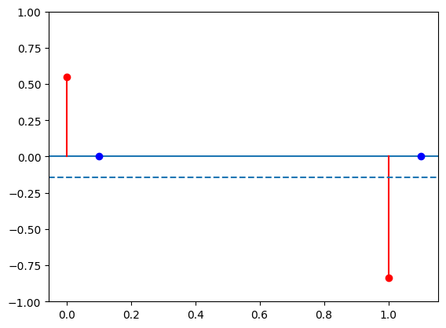
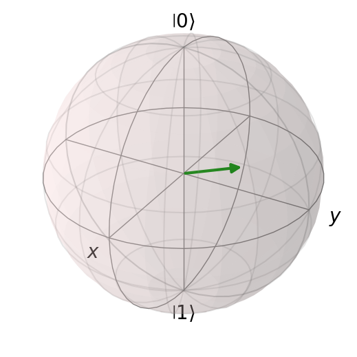
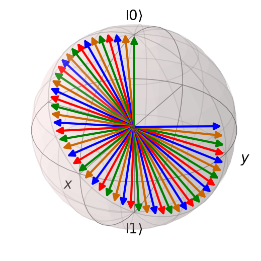
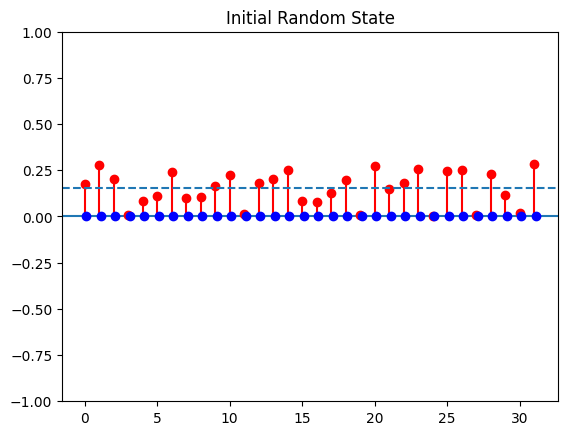
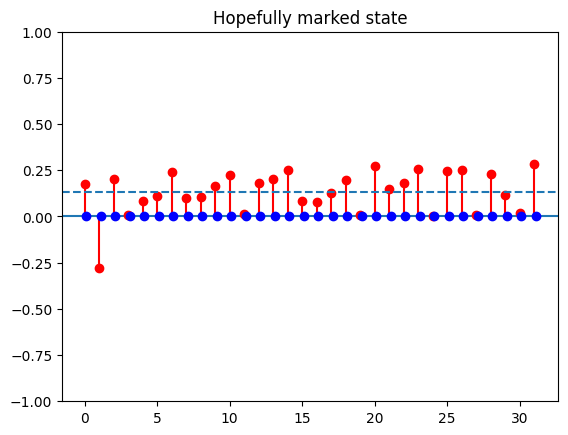

<!DOCTYPE html>


<html lang="en" data-content_root="" >

  <head>
    <meta charset="utf-8" />
    <meta name="viewport" content="width=device-width, initial-scale=1.0" /><meta name="generator" content="Docutils 0.18.1: http://docutils.sourceforge.net/" />

    <title>Quantum Computing 1 &#8212; Physics 246</title>
  
  
  
  <script data-cfasync="false">
    document.documentElement.dataset.mode = localStorage.getItem("mode") || "";
    document.documentElement.dataset.theme = localStorage.getItem("theme") || "light";
  </script>
  
  <!-- Loaded before other Sphinx assets -->
  <link href="_static/styles/theme.css?digest=5b4479735964841361fd" rel="stylesheet" />
<link href="_static/styles/bootstrap.css?digest=5b4479735964841361fd" rel="stylesheet" />
<link href="_static/styles/pydata-sphinx-theme.css?digest=5b4479735964841361fd" rel="stylesheet" />

  
  <link href="_static/vendor/fontawesome/6.1.2/css/all.min.css?digest=5b4479735964841361fd" rel="stylesheet" />
  <link rel="preload" as="font" type="font/woff2" crossorigin href="_static/vendor/fontawesome/6.1.2/webfonts/fa-solid-900.woff2" />
<link rel="preload" as="font" type="font/woff2" crossorigin href="_static/vendor/fontawesome/6.1.2/webfonts/fa-brands-400.woff2" />
<link rel="preload" as="font" type="font/woff2" crossorigin href="_static/vendor/fontawesome/6.1.2/webfonts/fa-regular-400.woff2" />

    <link rel="stylesheet" type="text/css" href="_static/pygments.css" />
    <link rel="stylesheet" href="_static/styles/sphinx-book-theme.css?digest=14f4ca6b54d191a8c7657f6c759bf11a5fb86285" type="text/css" />
    <link rel="stylesheet" type="text/css" href="_static/togglebutton.css" />
    <link rel="stylesheet" type="text/css" href="_static/copybutton.css" />
    <link rel="stylesheet" type="text/css" href="_static/mystnb.4510f1fc1dee50b3e5859aac5469c37c29e427902b24a333a5f9fcb2f0b3ac41.css" />
    <link rel="stylesheet" type="text/css" href="_static/sphinx-thebe.css" />
    <link rel="stylesheet" type="text/css" href="_static/design-style.4045f2051d55cab465a707391d5b2007.min.css" />
  
  <!-- Pre-loaded scripts that we'll load fully later -->
  <link rel="preload" as="script" href="_static/scripts/bootstrap.js?digest=5b4479735964841361fd" />
<link rel="preload" as="script" href="_static/scripts/pydata-sphinx-theme.js?digest=5b4479735964841361fd" />
  <script src="_static/vendor/fontawesome/6.1.2/js/all.min.js?digest=5b4479735964841361fd"></script>

    <script data-url_root="./" id="documentation_options" src="_static/documentation_options.js"></script>
    <script src="_static/jquery.js"></script>
    <script src="_static/underscore.js"></script>
    <script src="_static/_sphinx_javascript_frameworks_compat.js"></script>
    <script src="_static/doctools.js"></script>
    <script src="_static/clipboard.min.js"></script>
    <script src="_static/copybutton.js"></script>
    <script src="_static/scripts/sphinx-book-theme.js?digest=5a5c038af52cf7bc1a1ec88eea08e6366ee68824"></script>
    <script>let toggleHintShow = 'Click to show';</script>
    <script>let toggleHintHide = 'Click to hide';</script>
    <script>let toggleOpenOnPrint = 'true';</script>
    <script src="_static/togglebutton.js"></script>
    <script>var togglebuttonSelector = '.toggle, .admonition.dropdown';</script>
    <script src="_static/design-tabs.js"></script>
    <script>const THEBE_JS_URL = "https://unpkg.com/thebe@0.8.2/lib/index.js"
const thebe_selector = ".thebe,.cell"
const thebe_selector_input = "pre"
const thebe_selector_output = ".output, .cell_output"
</script>
    <script async="async" src="_static/sphinx-thebe.js"></script>
    <script>window.MathJax = {"options": {"processHtmlClass": "tex2jax_process|mathjax_process|math|output_area"}}</script>
    <script defer="defer" src="https://cdn.jsdelivr.net/npm/mathjax@3/es5/tex-mml-chtml.js"></script>
    <script>DOCUMENTATION_OPTIONS.pagename = 'QC1';</script>
    <link rel="index" title="Index" href="genindex.html" />
    <link rel="search" title="Search" href="search.html" />
    <link rel="next" title="Building a Physical Qubit" href="QC2.html" />
    <link rel="prev" title="Classifying Galaxies" href="MachineLearningGalaxies.html" />
  <meta name="viewport" content="width=device-width, initial-scale=1"/>
  <meta name="docsearch:language" content="en"/>
  </head>
  
  
  <body data-bs-spy="scroll" data-bs-target=".bd-toc-nav" data-offset="180" data-bs-root-margin="0px 0px -60%" data-default-mode="">

  
  
  <a class="skip-link" href="#main-content">Skip to main content</a>
  
  <div id="pst-scroll-pixel-helper"></div>

  
  <button type="button" class="btn rounded-pill" id="pst-back-to-top">
    <i class="fa-solid fa-arrow-up"></i>
    Back to top
  </button>

  
  <input type="checkbox"
          class="sidebar-toggle"
          name="__primary"
          id="__primary"/>
  <label class="overlay overlay-primary" for="__primary"></label>
  
  <input type="checkbox"
          class="sidebar-toggle"
          name="__secondary"
          id="__secondary"/>
  <label class="overlay overlay-secondary" for="__secondary"></label>
  
  <div class="search-button__wrapper">
    <div class="search-button__overlay"></div>
    <div class="search-button__search-container">
<form class="bd-search d-flex align-items-center"
      action="search.html"
      method="get">
  <i class="fa-solid fa-magnifying-glass"></i>
  <input type="search"
         class="form-control"
         name="q"
         id="search-input"
         placeholder="Search this book..."
         aria-label="Search this book..."
         autocomplete="off"
         autocorrect="off"
         autocapitalize="off"
         spellcheck="false"/>
  <span class="search-button__kbd-shortcut"><kbd class="kbd-shortcut__modifier">Ctrl</kbd>+<kbd>K</kbd></span>
</form></div>
  </div>
  
    <nav class="bd-header navbar navbar-expand-lg bd-navbar">
    </nav>
  
  <div class="bd-container">
    <div class="bd-container__inner bd-page-width">
      
      <div class="bd-sidebar-primary bd-sidebar">
        

  
  <div class="sidebar-header-items sidebar-primary__section">
    
    
    
    
  </div>
  
    <div class="sidebar-primary-items__start sidebar-primary__section">
        <div class="sidebar-primary-item">

  

<a class="navbar-brand logo" href="intro.html">
  
  
  
  
  
    
    
      
    
    
    
    <script>document.write(``);</script>
  
  
</a></div>
        <div class="sidebar-primary-item"><nav class="bd-links" id="bd-docs-nav" aria-label="Main">
    <div class="bd-toc-item navbar-nav active">
        
        <ul class="nav bd-sidenav bd-sidenav__home-link">
            <li class="toctree-l1">
                <a class="reference internal" href="intro.html">
                    An Introduction to Modern Computational Physics
                </a>
            </li>
        </ul>
        <ul class="current nav bd-sidenav">
<li class="toctree-l1"><a class="reference internal" href="N_Ways_of_Measuring_PI.html">N ways to measure <span class="math notranslate nohighlight">\(\pi\)</span></a></li>
<li class="toctree-l1"><a class="reference internal" href="Dynamics.html">Dynamics</a></li>
<li class="toctree-l1"><a class="reference internal" href="OrbitalDynamics.html">Orbital Dynamics</a></li>

<li class="toctree-l1"><a class="reference internal" href="Exoplanets.html">Exoplanets</a></li>
<li class="toctree-l1"><a class="reference internal" href="chaos.html">Chaos</a></li>
<li class="toctree-l1"><a class="reference internal" href="Random%20Walks.html">Random Walks</a></li>
<li class="toctree-l1"><a class="reference internal" href="Markov%20Chains.html">Markov Chains</a></li>
<li class="toctree-l1"><a class="reference internal" href="Predator-Prey.html">Predator-Prey</a></li>
<li class="toctree-l1"><a class="reference internal" href="ParticlePhysics.html">Particle Physics</a></li>
<li class="toctree-l1"><a class="reference internal" href="Climate.html">Climate Dynamics</a></li>
<li class="toctree-l1"><a class="reference internal" href="FluidDynamics.html">Fluid Dynamics</a></li>
<li class="toctree-l1"><a class="reference internal" href="MachineLearningGalaxies.html">Classifying Galaxies</a></li>
<li class="toctree-l1 current active"><a class="current reference internal" href="#">Quantum Computing 1</a></li>
<li class="toctree-l1"><a class="reference internal" href="QC2.html">Building a Physical Qubit</a></li>
<li class="toctree-l1"><a class="reference internal" href="OrbitalDynamics2.html">Many Body Simulations</a></li>
<li class="toctree-l1"><a class="reference internal" href="QC2_old.html">Quantum Computing 2</a></li>
</ul>

    </div>
</nav></div>
    </div>
  
  
  <div class="sidebar-primary-items__end sidebar-primary__section">
  </div>
  
  <div id="rtd-footer-container"></div>


      </div>
      
      <main id="main-content" class="bd-main">
        
        

<div class="sbt-scroll-pixel-helper"></div>

          <div class="bd-content">
            <div class="bd-article-container">
              
              <div class="bd-header-article">
<div class="header-article-items header-article__inner">
  
    <div class="header-article-items__start">
      
        <div class="header-article-item"><label class="sidebar-toggle primary-toggle btn btn-sm" for="__primary" title="Toggle primary sidebar" data-bs-placement="bottom" data-bs-toggle="tooltip">
  <span class="fa-solid fa-bars"></span>
</label></div>
      
    </div>
  
  
    <div class="header-article-items__end">
      
        <div class="header-article-item">

<div class="article-header-buttons">


<div class="dropdown dropdown-launch-buttons">
  <button class="btn dropdown-toggle" type="button" data-bs-toggle="dropdown" aria-expanded="false" aria-label="Launch interactive content">
    <i class="fas fa-rocket"></i>
  </button>
  <ul class="dropdown-menu">
      
      
      
      <li><a href="https://colab.research.google.com/github/bkclark/IntroductionToComputationalPhysics/blob/main/IntroductionToComputationalPhysics/QC1.ipynb" target="_blank"
   class="btn btn-sm dropdown-item"
   title="Launch onColab"
   data-bs-placement="left" data-bs-toggle="tooltip"
>
  

<span class="btn__icon-container">
  
    
  </span>
<span class="btn__text-container">Colab</span>
</a>
</li>
      
  </ul>
</div>


<div class="dropdown dropdown-download-buttons">
  <button class="btn dropdown-toggle" type="button" data-bs-toggle="dropdown" aria-expanded="false" aria-label="Download this page">
    <i class="fas fa-download"></i>
  </button>
  <ul class="dropdown-menu">
      
      
      
      <li><a href="_sources/QC1.ipynb" target="_blank"
   class="btn btn-sm btn-download-source-button dropdown-item"
   title="Download source file"
   data-bs-placement="left" data-bs-toggle="tooltip"
>
  

<span class="btn__icon-container">
  <i class="fas fa-file"></i>
  </span>
<span class="btn__text-container">.ipynb</span>
</a>
</li>
      
      
      
      
      <li>
<button onclick="window.print()"
  class="btn btn-sm btn-download-pdf-button dropdown-item"
  title="Print to PDF"
  data-bs-placement="left" data-bs-toggle="tooltip"
>
  

<span class="btn__icon-container">
  <i class="fas fa-file-pdf"></i>
  </span>
<span class="btn__text-container">.pdf</span>
</button>
</li>
      
  </ul>
</div>


<button onclick="toggleFullScreen()"
  class="btn btn-sm btn-fullscreen-button"
  title="Fullscreen mode"
  data-bs-placement="bottom" data-bs-toggle="tooltip"
>
  

<span class="btn__icon-container">
  <i class="fas fa-expand"></i>
  </span>

</button>


<script>
document.write(`
  <button class="btn btn-sm navbar-btn theme-switch-button" title="light/dark" aria-label="light/dark" data-bs-placement="bottom" data-bs-toggle="tooltip">
    <span class="theme-switch nav-link" data-mode="light"><i class="fa-solid fa-sun fa-lg"></i></span>
    <span class="theme-switch nav-link" data-mode="dark"><i class="fa-solid fa-moon fa-lg"></i></span>
    <span class="theme-switch nav-link" data-mode="auto"><i class="fa-solid fa-circle-half-stroke fa-lg"></i></span>
  </button>
`);
</script>


<script>
document.write(`
  <button class="btn btn-sm navbar-btn search-button search-button__button" title="Search" aria-label="Search" data-bs-placement="bottom" data-bs-toggle="tooltip">
    <i class="fa-solid fa-magnifying-glass fa-lg"></i>
  </button>
`);
</script>
<label class="sidebar-toggle secondary-toggle btn btn-sm" for="__secondary"title="Toggle secondary sidebar" data-bs-placement="bottom" data-bs-toggle="tooltip">
    <span class="fa-solid fa-list"></span>
</label>
</div></div>
      
    </div>
  
</div>
</div>
              
              

<div id="jb-print-docs-body" class="onlyprint">
    <h1>Quantum Computing 1</h1>
    <!-- Table of contents -->
    <div id="print-main-content">
        <div id="jb-print-toc">
            
            <div>
                <h2> Contents </h2>
            </div>
            <nav aria-label="Page">
                <ul class="visible nav section-nav flex-column">
<li class="toc-h2 nav-item toc-entry"><a class="reference internal nav-link" href="#exercise-1-a-single-qubit-33-points">Exercise 1: A Single Qubit (33 points)</a><ul class="nav section-nav flex-column">
<li class="toc-h3 nav-item toc-entry"><a class="reference internal nav-link" href="#a-a-one-qubit-state">a. A one qubit state</a></li>
<li class="toc-h3 nav-item toc-entry"><a class="reference internal nav-link" href="#b-one-qubit-gates">b. One qubit gates</a></li>
<li class="toc-h3 nav-item toc-entry"><a class="reference internal nav-link" href="#c-seeing-the-rotation">c.  Seeing the rotation</a></li>
<li class="toc-h3 nav-item toc-entry"><a class="reference internal nav-link" href="#d-measuring-the-state">d. Measuring the state</a></li>
</ul>
</li>
<li class="toc-h2 nav-item toc-entry"><a class="reference internal nav-link" href="#exercise-2-two-qubits-34-points">Exercise 2: Two qubits (34 points)</a><ul class="nav section-nav flex-column">
<li class="toc-h3 nav-item toc-entry"><a class="reference internal nav-link" href="#a-control-not-gates">a. Control-not gates</a></li>
<li class="toc-h3 nav-item toc-entry"><a class="reference internal nav-link" href="#b-build-an-epr-pair">b.  Build an EPR Pair</a></li>
<li class="toc-h3 nav-item toc-entry"><a class="reference internal nav-link" href="#c-measuring-epr-pairs">c. Measuring EPR Pairs</a></li>
<li class="toc-h3 nav-item toc-entry"><a class="reference internal nav-link" href="#d-running-on-an-actual-quantum-computer">d. Running on an actual Quantum Computer</a></li>
<li class="toc-h3 nav-item toc-entry"><a class="reference internal nav-link" href="#e-entanglement-extra-credit-5-points">e. Entanglement (Extra Credit: 5 points)</a></li>
</ul>
</li>
<li class="toc-h2 nav-item toc-entry"><a class="reference internal nav-link" href="#exercise-3-grover-s-algorithm">Exercise 3:  Grover’s Algorithm</a><ul class="nav section-nav flex-column">
<li class="toc-h3 nav-item toc-entry"><a class="reference internal nav-link" href="#a-control-control-control-z">a. Control-Control-Control Z</a></li>
<li class="toc-h3 nav-item toc-entry"><a class="reference internal nav-link" href="#b-all-hadamards">b. All Hadamards</a></li>
<li class="toc-h3 nav-item toc-entry"><a class="reference internal nav-link" href="#c-flipallbutzero">c. FlipAllButZero</a></li>
<li class="toc-h3 nav-item toc-entry"><a class="reference internal nav-link" href="#d-invert">d. Invert</a></li>
<li class="toc-h3 nav-item toc-entry"><a class="reference internal nav-link" href="#e-running-grover-s-algorithm">e. Running Grover’s Algorithm</a></li>
</ul>
</li>
<li class="toc-h2 nav-item toc-entry"><a class="reference internal nav-link" href="#exercise-4-quantum-key-distribution-ec-20-points">Exercise 4 Quantum Key Distribution (EC - 20 points)</a><ul class="nav section-nav flex-column">
<li class="toc-h3 nav-item toc-entry"><a class="reference internal nav-link" href="#a-one-time-pads">a. One time pads</a></li>
<li class="toc-h3 nav-item toc-entry"><a class="reference internal nav-link" href="#b-eve-s-arrival">b. Eve’s arrival</a></li>
<li class="toc-h3 nav-item toc-entry"><a class="reference internal nav-link" href="#c-an-improved-protocol">c. An improved protocol</a></li>
<li class="toc-h3 nav-item toc-entry"><a class="reference internal nav-link" href="#d-eve-in-the-improved-protocol">d. Eve in the improved protocol</a></li>
<li class="toc-h3 nav-item toc-entry"><a class="reference internal nav-link" href="#e-not-flipping-shared-coins">e.  Not flipping shared coins</a></li>
</ul>
</li>
<li class="toc-h2 nav-item toc-entry"><a class="reference internal nav-link" href="#exercise-5-building-up-tools-ec-10-points">Exercise 5: Building up tools (EC - 10 points)</a><ul class="nav section-nav flex-column">
<li class="toc-h3 nav-item toc-entry"><a class="reference internal nav-link" href="#a-initializing-a-binary-number">a. Initializing a binary number</a></li>
<li class="toc-h3 nav-item toc-entry"><a class="reference internal nav-link" href="#b-a-sum-over-all-states">b. A sum over all states</a></li>
<li class="toc-h3 nav-item toc-entry"><a class="reference internal nav-link" href="#c-angle-of-a-random-gate">c.  Angle of a random gate</a></li>
<li class="toc-h3 nav-item toc-entry"><a class="reference internal nav-link" href="#d-inverting-a-cnot">d. Inverting a CNOT</a></li>
<li class="toc-h3 nav-item toc-entry"><a class="reference internal nav-link" href="#e-deferred-measurements">e. Deferred Measurements</a></li>
</ul>
</li>
</ul>
            </nav>
        </div>
    </div>
</div>

              
                
<div id="searchbox"></div>
                <article class="bd-article" role="main">
                  
  <section class="tex2jax_ignore mathjax_ignore" id="quantum-computing-1">
<h1>Quantum Computing 1<a class="headerlink" href="#quantum-computing-1" title="Permalink to this heading">#</a></h1>
<ul class="simple">
<li><p><strong>Author:</strong></p></li>
<li><p><strong>Date:</strong></p></li>
<li><p><strong>Time Spent on this Assignment:</strong></p></li>
</ul>
<div class="cell docutils container">
<div class="cell_input docutils container">
<div class="highlight-ipython3 notranslate"><div class="highlight"><pre><span></span><span class="o">!</span>pip<span class="w"> </span>install<span class="w"> </span>qiskit<span class="o">[</span>visualization<span class="o">]</span><span class="p">;</span>
<span class="o">!</span>pip<span class="w"> </span>install<span class="w"> </span>qiskit_aer<span class="p">;</span>
<span class="o">!</span>pip<span class="w"> </span>install<span class="w"> </span>qutip
<span class="o">!</span>pip<span class="w"> </span>install<span class="w"> </span>qiskit-ibmq-provider
</pre></div>
</div>
</div>
<div class="cell_output docutils container">
<div class="output stream highlight-myst-ansi notranslate"><div class="highlight"><pre><span></span>Collecting qiskit[visualization]
  Downloading qiskit-1.2.4-cp38-abi3-manylinux_2_17_x86_64.manylinux2014_x86_64.whl.metadata (12 kB)
</pre></div>
</div>
<div class="output stream highlight-myst-ansi notranslate"><div class="highlight"><pre><span></span>Collecting rustworkx&gt;=0.15.0 (from qiskit[visualization])
  Downloading rustworkx-0.15.1-cp38-abi3-manylinux_2_17_x86_64.manylinux2014_x86_64.whl.metadata (9.9 kB)
Requirement already satisfied: numpy&lt;3,&gt;=1.17 in /opt/hostedtoolcache/Python/3.8.18/x64/lib/python3.8/site-packages (from qiskit[visualization]) (1.24.4)
Requirement already satisfied: scipy&gt;=1.5 in /opt/hostedtoolcache/Python/3.8.18/x64/lib/python3.8/site-packages (from qiskit[visualization]) (1.10.1)
Collecting sympy&gt;=1.3 (from qiskit[visualization])
  Downloading sympy-1.13.3-py3-none-any.whl.metadata (12 kB)
</pre></div>
</div>
<div class="output stream highlight-myst-ansi notranslate"><div class="highlight"><pre><span></span>Collecting dill&gt;=0.3 (from qiskit[visualization])
  Downloading dill-0.3.9-py3-none-any.whl.metadata (10 kB)
Requirement already satisfied: python-dateutil&gt;=2.8.0 in /opt/hostedtoolcache/Python/3.8.18/x64/lib/python3.8/site-packages (from qiskit[visualization]) (2.9.0.post0)
Collecting stevedore&gt;=3.0.0 (from qiskit[visualization])
  Downloading stevedore-5.3.0-py3-none-any.whl.metadata (2.3 kB)
Requirement already satisfied: typing-extensions in /opt/hostedtoolcache/Python/3.8.18/x64/lib/python3.8/site-packages (from qiskit[visualization]) (4.12.2)
</pre></div>
</div>
<div class="output stream highlight-myst-ansi notranslate"><div class="highlight"><pre><span></span>Collecting symengine&lt;0.14,&gt;=0.11 (from qiskit[visualization])
  Downloading symengine-0.13.0-cp38-cp38-manylinux_2_17_x86_64.manylinux2014_x86_64.whl.metadata (1.2 kB)
</pre></div>
</div>
<div class="output stream highlight-myst-ansi notranslate"><div class="highlight"><pre><span></span>Requirement already satisfied: matplotlib&gt;=3.3 in /opt/hostedtoolcache/Python/3.8.18/x64/lib/python3.8/site-packages (from qiskit[visualization]) (3.7.5)
Collecting pydot (from qiskit[visualization])
  Downloading pydot-3.0.2-py3-none-any.whl.metadata (10 kB)
Requirement already satisfied: Pillow&gt;=4.2.1 in /opt/hostedtoolcache/Python/3.8.18/x64/lib/python3.8/site-packages (from qiskit[visualization]) (10.4.0)
Collecting pylatexenc&gt;=1.4 (from qiskit[visualization])
  Downloading pylatexenc-2.10.tar.gz (162 kB)
</pre></div>
</div>
<div class="output stream highlight-myst-ansi notranslate"><div class="highlight"><pre><span></span>  Preparing metadata (setup.py) ... ?25l-
</pre></div>
</div>
<div class="output stream highlight-myst-ansi notranslate"><div class="highlight"><pre><span></span> done
?25hCollecting seaborn&gt;=0.9.0 (from qiskit[visualization])
  Downloading seaborn-0.13.2-py3-none-any.whl.metadata (5.4 kB)
</pre></div>
</div>
<div class="output stream highlight-myst-ansi notranslate"><div class="highlight"><pre><span></span>Requirement already satisfied: contourpy&gt;=1.0.1 in /opt/hostedtoolcache/Python/3.8.18/x64/lib/python3.8/site-packages (from matplotlib&gt;=3.3-&gt;qiskit[visualization]) (1.1.1)
Requirement already satisfied: cycler&gt;=0.10 in /opt/hostedtoolcache/Python/3.8.18/x64/lib/python3.8/site-packages (from matplotlib&gt;=3.3-&gt;qiskit[visualization]) (0.12.1)
Requirement already satisfied: fonttools&gt;=4.22.0 in /opt/hostedtoolcache/Python/3.8.18/x64/lib/python3.8/site-packages (from matplotlib&gt;=3.3-&gt;qiskit[visualization]) (4.54.1)
Requirement already satisfied: kiwisolver&gt;=1.0.1 in /opt/hostedtoolcache/Python/3.8.18/x64/lib/python3.8/site-packages (from matplotlib&gt;=3.3-&gt;qiskit[visualization]) (1.4.7)
Requirement already satisfied: packaging&gt;=20.0 in /opt/hostedtoolcache/Python/3.8.18/x64/lib/python3.8/site-packages (from matplotlib&gt;=3.3-&gt;qiskit[visualization]) (24.1)
Requirement already satisfied: pyparsing&gt;=2.3.1 in /opt/hostedtoolcache/Python/3.8.18/x64/lib/python3.8/site-packages (from matplotlib&gt;=3.3-&gt;qiskit[visualization]) (3.1.4)
Requirement already satisfied: importlib-resources&gt;=3.2.0 in /opt/hostedtoolcache/Python/3.8.18/x64/lib/python3.8/site-packages (from matplotlib&gt;=3.3-&gt;qiskit[visualization]) (6.4.5)
Requirement already satisfied: six&gt;=1.5 in /opt/hostedtoolcache/Python/3.8.18/x64/lib/python3.8/site-packages (from python-dateutil&gt;=2.8.0-&gt;qiskit[visualization]) (1.16.0)
Requirement already satisfied: pandas&gt;=1.2 in /opt/hostedtoolcache/Python/3.8.18/x64/lib/python3.8/site-packages (from seaborn&gt;=0.9.0-&gt;qiskit[visualization]) (2.0.3)
</pre></div>
</div>
<div class="output stream highlight-myst-ansi notranslate"><div class="highlight"><pre><span></span>Collecting pbr&gt;=2.0.0 (from stevedore&gt;=3.0.0-&gt;qiskit[visualization])
  Downloading pbr-6.1.0-py2.py3-none-any.whl.metadata (3.4 kB)
Collecting mpmath&lt;1.4,&gt;=1.1.0 (from sympy&gt;=1.3-&gt;qiskit[visualization])
  Downloading mpmath-1.3.0-py3-none-any.whl.metadata (8.6 kB)
</pre></div>
</div>
<div class="output stream highlight-myst-ansi notranslate"><div class="highlight"><pre><span></span>Requirement already satisfied: zipp&gt;=3.1.0 in /opt/hostedtoolcache/Python/3.8.18/x64/lib/python3.8/site-packages (from importlib-resources&gt;=3.2.0-&gt;matplotlib&gt;=3.3-&gt;qiskit[visualization]) (3.20.2)
Requirement already satisfied: pytz&gt;=2020.1 in /opt/hostedtoolcache/Python/3.8.18/x64/lib/python3.8/site-packages (from pandas&gt;=1.2-&gt;seaborn&gt;=0.9.0-&gt;qiskit[visualization]) (2024.2)
Requirement already satisfied: tzdata&gt;=2022.1 in /opt/hostedtoolcache/Python/3.8.18/x64/lib/python3.8/site-packages (from pandas&gt;=1.2-&gt;seaborn&gt;=0.9.0-&gt;qiskit[visualization]) (2024.2)
</pre></div>
</div>
<div class="output stream highlight-myst-ansi notranslate"><div class="highlight"><pre><span></span>Downloading dill-0.3.9-py3-none-any.whl (119 kB)
Downloading rustworkx-0.15.1-cp38-abi3-manylinux_2_17_x86_64.manylinux2014_x86_64.whl (2.0 MB)
?25l   ━━━━━━━━━━━━━━━━━━━━━━━━━━━━━━━━━━━━━━━━ <span class=" -Color -Color-Green">0.0/2.0 MB</span> <span class=" -Color -Color-Red">?</span> eta <span class=" -Color -Color-Cyan">-:--:--</span>
   ━━━━━━━━━━━━━━━━━━━━━━━━━━━━━━━━━━━━━━━━ <span class=" -Color -Color-Green">2.0/2.0 MB</span> <span class=" -Color -Color-Red">129.8 MB/s</span> eta <span class=" -Color -Color-Cyan">0:00:00</span>
?25hDownloading seaborn-0.13.2-py3-none-any.whl (294 kB)
</pre></div>
</div>
<div class="output stream highlight-myst-ansi notranslate"><div class="highlight"><pre><span></span>Downloading stevedore-5.3.0-py3-none-any.whl (49 kB)
Downloading symengine-0.13.0-cp38-cp38-manylinux_2_17_x86_64.manylinux2014_x86_64.whl (49.7 MB)
?25l   ━━━━━━━━━━━━━━━━━━━━━━━━━━━━━━━━━━━━━━━━ <span class=" -Color -Color-Green">0.0/49.7 MB</span> <span class=" -Color -Color-Red">?</span> eta <span class=" -Color -Color-Cyan">-:--:--</span>
</pre></div>
</div>
<div class="output stream highlight-myst-ansi notranslate"><div class="highlight"><pre><span></span>   ━━━━━━━━━━━━━━━━━━━━━━━━━━━━╸━━━━━━━━━━━ <span class=" -Color -Color-Green">35.7/49.7 MB</span> <span class=" -Color -Color-Red">178.6 MB/s</span> eta <span class=" -Color -Color-Cyan">0:00:01</span>
</pre></div>
</div>
<div class="output stream highlight-myst-ansi notranslate"><div class="highlight"><pre><span></span>   ━━━━━━━━━━━━━━━━━━━━━━━━━━━━━━━━━━━━━━━━ <span class=" -Color -Color-Green">49.7/49.7 MB</span> <span class=" -Color -Color-Red">124.4 MB/s</span> eta <span class=" -Color -Color-Cyan">0:00:00</span>
?25hDownloading sympy-1.13.3-py3-none-any.whl (6.2 MB)
?25l   ━━━━━━━━━━━━━━━━━━━━━━━━━━━━━━━━━━━━━━━━ <span class=" -Color -Color-Green">0.0/6.2 MB</span> <span class=" -Color -Color-Red">?</span> eta <span class=" -Color -Color-Cyan">-:--:--</span>
</pre></div>
</div>
<div class="output stream highlight-myst-ansi notranslate"><div class="highlight"><pre><span></span>   ━━━━━━━━━━━━━━━━━━━━━━━━━━━━━━━━━━━━━━━━ <span class=" -Color -Color-Green">6.2/6.2 MB</span> <span class=" -Color -Color-Red">97.9 MB/s</span> eta <span class=" -Color -Color-Cyan">0:00:00</span>
?25hDownloading pydot-3.0.2-py3-none-any.whl (35 kB)
Downloading qiskit-1.2.4-cp38-abi3-manylinux_2_17_x86_64.manylinux2014_x86_64.whl (4.8 MB)
?25l   ━━━━━━━━━━━━━━━━━━━━━━━━━━━━━━━━━━━━━━━━ <span class=" -Color -Color-Green">0.0/4.8 MB</span> <span class=" -Color -Color-Red">?</span> eta <span class=" -Color -Color-Cyan">-:--:--</span>
</pre></div>
</div>
<div class="output stream highlight-myst-ansi notranslate"><div class="highlight"><pre><span></span>   ━━━━━━━━━━━━━━━━━━━━━━━━━━━━━━━━━━━━━━━━ <span class=" -Color -Color-Green">4.8/4.8 MB</span> <span class=" -Color -Color-Red">149.4 MB/s</span> eta <span class=" -Color -Color-Cyan">0:00:00</span>
?25hDownloading mpmath-1.3.0-py3-none-any.whl (536 kB)
?25l   ━━━━━━━━━━━━━━━━━━━━━━━━━━━━━━━━━━━━━━━━ <span class=" -Color -Color-Green">0.0/536.2 kB</span> <span class=" -Color -Color-Red">?</span> eta <span class=" -Color -Color-Cyan">-:--:--</span>
   ━━━━━━━━━━━━━━━━━━━━━━━━━━━━━━━━━━━━━━━━ <span class=" -Color -Color-Green">536.2/536.2 kB</span> <span class=" -Color -Color-Red">63.4 MB/s</span> eta <span class=" -Color -Color-Cyan">0:00:00</span>
?25hDownloading pbr-6.1.0-py2.py3-none-any.whl (108 kB)
</pre></div>
</div>
<div class="output stream highlight-myst-ansi notranslate"><div class="highlight"><pre><span></span>Building wheels for collected packages: pylatexenc
</pre></div>
</div>
<div class="output stream highlight-myst-ansi notranslate"><div class="highlight"><pre><span></span>  Building wheel for pylatexenc (setup.py) ... ?25l-
</pre></div>
</div>
<div class="output stream highlight-myst-ansi notranslate"><div class="highlight"><pre><span></span> \
</pre></div>
</div>
<div class="output stream highlight-myst-ansi notranslate"><div class="highlight"><pre><span></span> done
?25h  Created wheel for pylatexenc: filename=pylatexenc-2.10-py3-none-any.whl size=136823 sha256=d07aa2a49cb483ab10fb6c684cefd31305e60b8795d83d693b4f5e86f58c3905
  Stored in directory: /home/runner/.cache/pip/wheels/72/99/be/81d9bcdf5dd5ee5acd8119a9dd5bc07204c9ce205fd341b021
Successfully built pylatexenc
</pre></div>
</div>
<div class="output stream highlight-myst-ansi notranslate"><div class="highlight"><pre><span></span>Installing collected packages: pylatexenc, mpmath, sympy, symengine, rustworkx, pydot, pbr, dill, stevedore, seaborn, qiskit
</pre></div>
</div>
<div class="output stream highlight-myst-ansi notranslate"><div class="highlight"><pre><span></span>Successfully installed dill-0.3.9 mpmath-1.3.0 pbr-6.1.0 pydot-3.0.2 pylatexenc-2.10 qiskit-1.2.4 rustworkx-0.15.1 seaborn-0.13.2 stevedore-5.3.0 symengine-0.13.0 sympy-1.13.3
</pre></div>
</div>
<div class="output stream highlight-myst-ansi notranslate"><div class="highlight"><pre><span></span>Collecting qiskit_aer
</pre></div>
</div>
<div class="output stream highlight-myst-ansi notranslate"><div class="highlight"><pre><span></span>  Downloading qiskit_aer-0.15.1-cp38-cp38-manylinux_2_17_x86_64.manylinux2014_x86_64.whl.metadata (8.0 kB)
Requirement already satisfied: qiskit&gt;=1.1.0 in /opt/hostedtoolcache/Python/3.8.18/x64/lib/python3.8/site-packages (from qiskit_aer) (1.2.4)
Requirement already satisfied: numpy&gt;=1.16.3 in /opt/hostedtoolcache/Python/3.8.18/x64/lib/python3.8/site-packages (from qiskit_aer) (1.24.4)
Requirement already satisfied: scipy&gt;=1.0 in /opt/hostedtoolcache/Python/3.8.18/x64/lib/python3.8/site-packages (from qiskit_aer) (1.10.1)
Requirement already satisfied: psutil&gt;=5 in /opt/hostedtoolcache/Python/3.8.18/x64/lib/python3.8/site-packages (from qiskit_aer) (6.1.0)
Requirement already satisfied: rustworkx&gt;=0.15.0 in /opt/hostedtoolcache/Python/3.8.18/x64/lib/python3.8/site-packages (from qiskit&gt;=1.1.0-&gt;qiskit_aer) (0.15.1)
Requirement already satisfied: sympy&gt;=1.3 in /opt/hostedtoolcache/Python/3.8.18/x64/lib/python3.8/site-packages (from qiskit&gt;=1.1.0-&gt;qiskit_aer) (1.13.3)
Requirement already satisfied: dill&gt;=0.3 in /opt/hostedtoolcache/Python/3.8.18/x64/lib/python3.8/site-packages (from qiskit&gt;=1.1.0-&gt;qiskit_aer) (0.3.9)
Requirement already satisfied: python-dateutil&gt;=2.8.0 in /opt/hostedtoolcache/Python/3.8.18/x64/lib/python3.8/site-packages (from qiskit&gt;=1.1.0-&gt;qiskit_aer) (2.9.0.post0)
Requirement already satisfied: stevedore&gt;=3.0.0 in /opt/hostedtoolcache/Python/3.8.18/x64/lib/python3.8/site-packages (from qiskit&gt;=1.1.0-&gt;qiskit_aer) (5.3.0)
Requirement already satisfied: typing-extensions in /opt/hostedtoolcache/Python/3.8.18/x64/lib/python3.8/site-packages (from qiskit&gt;=1.1.0-&gt;qiskit_aer) (4.12.2)
Requirement already satisfied: symengine&lt;0.14,&gt;=0.11 in /opt/hostedtoolcache/Python/3.8.18/x64/lib/python3.8/site-packages (from qiskit&gt;=1.1.0-&gt;qiskit_aer) (0.13.0)
Requirement already satisfied: six&gt;=1.5 in /opt/hostedtoolcache/Python/3.8.18/x64/lib/python3.8/site-packages (from python-dateutil&gt;=2.8.0-&gt;qiskit&gt;=1.1.0-&gt;qiskit_aer) (1.16.0)
Requirement already satisfied: pbr&gt;=2.0.0 in /opt/hostedtoolcache/Python/3.8.18/x64/lib/python3.8/site-packages (from stevedore&gt;=3.0.0-&gt;qiskit&gt;=1.1.0-&gt;qiskit_aer) (6.1.0)
Requirement already satisfied: mpmath&lt;1.4,&gt;=1.1.0 in /opt/hostedtoolcache/Python/3.8.18/x64/lib/python3.8/site-packages (from sympy&gt;=1.3-&gt;qiskit&gt;=1.1.0-&gt;qiskit_aer) (1.3.0)
Downloading qiskit_aer-0.15.1-cp38-cp38-manylinux_2_17_x86_64.manylinux2014_x86_64.whl (12.3 MB)
?25l   ━━━━━━━━━━━━━━━━━━━━━━━━━━━━━━━━━━━━━━━━ <span class=" -Color -Color-Green">0.0/12.3 MB</span> <span class=" -Color -Color-Red">?</span> eta <span class=" -Color -Color-Cyan">-:--:--</span>
</pre></div>
</div>
<div class="output stream highlight-myst-ansi notranslate"><div class="highlight"><pre><span></span>   ━━━━━━━━━━━━━━━━━━━━━━━━━━━━━━━━━━━━━━━━ <span class=" -Color -Color-Green">12.3/12.3 MB</span> <span class=" -Color -Color-Red">132.1 MB/s</span> eta <span class=" -Color -Color-Cyan">0:00:00</span>
?25h
</pre></div>
</div>
<div class="output stream highlight-myst-ansi notranslate"><div class="highlight"><pre><span></span>Installing collected packages: qiskit_aer
</pre></div>
</div>
<div class="output stream highlight-myst-ansi notranslate"><div class="highlight"><pre><span></span>Successfully installed qiskit_aer-0.15.1
</pre></div>
</div>
<div class="output stream highlight-myst-ansi notranslate"><div class="highlight"><pre><span></span>Collecting qutip
  Downloading qutip-5.0.1.tar.gz (6.4 MB)
?25l     ━━━━━━━━━━━━━━━━━━━━━━━━━━━━━━━━━━━━━━━━ <span class=" -Color -Color-Green">0.0/6.4 MB</span> <span class=" -Color -Color-Red">?</span> eta <span class=" -Color -Color-Cyan">-:--:--</span>
</pre></div>
</div>
<div class="output stream highlight-myst-ansi notranslate"><div class="highlight"><pre><span></span>     ━━━━━━━━━━━━━━━━━━━━━━━━━━━━━━━━━━━━━━━━ <span class=" -Color -Color-Green">6.4/6.4 MB</span> <span class=" -Color -Color-Red">116.7 MB/s</span> eta <span class=" -Color -Color-Cyan">0:00:00</span>
?25h
</pre></div>
</div>
<div class="output stream highlight-myst-ansi notranslate"><div class="highlight"><pre><span></span>  Installing build dependencies ... ?25l-
</pre></div>
</div>
<div class="output stream highlight-myst-ansi notranslate"><div class="highlight"><pre><span></span> \
</pre></div>
</div>
<div class="output stream highlight-myst-ansi notranslate"><div class="highlight"><pre><span></span> |
</pre></div>
</div>
<div class="output stream highlight-myst-ansi notranslate"><div class="highlight"><pre><span></span> /
</pre></div>
</div>
<div class="output stream highlight-myst-ansi notranslate"><div class="highlight"><pre><span></span> -
</pre></div>
</div>
<div class="output stream highlight-myst-ansi notranslate"><div class="highlight"><pre><span></span> \
</pre></div>
</div>
<div class="output stream highlight-myst-ansi notranslate"><div class="highlight"><pre><span></span> |
</pre></div>
</div>
<div class="output stream highlight-myst-ansi notranslate"><div class="highlight"><pre><span></span> /
</pre></div>
</div>
<div class="output stream highlight-myst-ansi notranslate"><div class="highlight"><pre><span></span> -
</pre></div>
</div>
<div class="output stream highlight-myst-ansi notranslate"><div class="highlight"><pre><span></span> \
</pre></div>
</div>
<div class="output stream highlight-myst-ansi notranslate"><div class="highlight"><pre><span></span> done
</pre></div>
</div>
<div class="output stream highlight-myst-ansi notranslate"><div class="highlight"><pre><span></span>^C
?25h  Getting requirements to build wheel ... ?25l?25hcanceled
<span class=" -Color -Color-Red">ERROR: Operation cancelled by user</span>

</pre></div>
</div>
<div class="output stream highlight-myst-ansi notranslate"><div class="highlight"><pre><span></span>Collecting qiskit-ibmq-provider
  Downloading qiskit_ibmq_provider-0.20.2-py3-none-any.whl.metadata (14 kB)
</pre></div>
</div>
<div class="output stream highlight-myst-ansi notranslate"><div class="highlight"><pre><span></span>Collecting qiskit-terra&gt;=0.18.0 (from qiskit-ibmq-provider)
</pre></div>
</div>
<div class="output stream highlight-myst-ansi notranslate"><div class="highlight"><pre><span></span>  Downloading qiskit_terra-0.46.3-cp38-abi3-manylinux_2_17_x86_64.manylinux2014_x86_64.whl.metadata (13 kB)
Requirement already satisfied: requests&gt;=2.19 in /opt/hostedtoolcache/Python/3.8.18/x64/lib/python3.8/site-packages (from qiskit-ibmq-provider) (2.32.3)
Collecting requests-ntlm&lt;=1.1.0 (from qiskit-ibmq-provider)
  Downloading requests_ntlm-1.1.0-py2.py3-none-any.whl.metadata (938 bytes)
</pre></div>
</div>
<div class="output stream highlight-myst-ansi notranslate"><div class="highlight"><pre><span></span>Collecting numpy&lt;1.24 (from qiskit-ibmq-provider)
  Downloading numpy-1.23.5-cp38-cp38-manylinux_2_17_x86_64.manylinux2014_x86_64.whl.metadata (2.3 kB)
Requirement already satisfied: urllib3&gt;=1.21.1 in /opt/hostedtoolcache/Python/3.8.18/x64/lib/python3.8/site-packages (from qiskit-ibmq-provider) (2.2.3)
Requirement already satisfied: python-dateutil&gt;=2.8.0 in /opt/hostedtoolcache/Python/3.8.18/x64/lib/python3.8/site-packages (from qiskit-ibmq-provider) (2.9.0.post0)
</pre></div>
</div>
<div class="output stream highlight-myst-ansi notranslate"><div class="highlight"><pre><span></span>Collecting websocket-client&gt;=1.5.1 (from qiskit-ibmq-provider)
  Downloading websocket_client-1.8.0-py3-none-any.whl.metadata (8.0 kB)
</pre></div>
</div>
<div class="output stream highlight-myst-ansi notranslate"><div class="highlight"><pre><span></span>Collecting websockets&gt;=10.0 (from qiskit-ibmq-provider)
  Downloading websockets-13.1-cp38-cp38-manylinux_2_5_x86_64.manylinux1_x86_64.manylinux_2_17_x86_64.manylinux2014_x86_64.whl.metadata (6.8 kB)
Requirement already satisfied: six&gt;=1.5 in /opt/hostedtoolcache/Python/3.8.18/x64/lib/python3.8/site-packages (from python-dateutil&gt;=2.8.0-&gt;qiskit-ibmq-provider) (1.16.0)
Requirement already satisfied: rustworkx&gt;=0.13.0 in /opt/hostedtoolcache/Python/3.8.18/x64/lib/python3.8/site-packages (from qiskit-terra&gt;=0.18.0-&gt;qiskit-ibmq-provider) (0.15.1)
Collecting ply&gt;=3.10 (from qiskit-terra&gt;=0.18.0-&gt;qiskit-ibmq-provider)
  Downloading ply-3.11-py2.py3-none-any.whl.metadata (844 bytes)
Requirement already satisfied: psutil&gt;=5 in /opt/hostedtoolcache/Python/3.8.18/x64/lib/python3.8/site-packages (from qiskit-terra&gt;=0.18.0-&gt;qiskit-ibmq-provider) (6.1.0)
</pre></div>
</div>
<div class="output stream highlight-myst-ansi notranslate"><div class="highlight"><pre><span></span>Requirement already satisfied: scipy&gt;=1.5 in /opt/hostedtoolcache/Python/3.8.18/x64/lib/python3.8/site-packages (from qiskit-terra&gt;=0.18.0-&gt;qiskit-ibmq-provider) (1.10.1)
Requirement already satisfied: sympy&gt;=1.3 in /opt/hostedtoolcache/Python/3.8.18/x64/lib/python3.8/site-packages (from qiskit-terra&gt;=0.18.0-&gt;qiskit-ibmq-provider) (1.13.3)
Requirement already satisfied: dill&gt;=0.3 in /opt/hostedtoolcache/Python/3.8.18/x64/lib/python3.8/site-packages (from qiskit-terra&gt;=0.18.0-&gt;qiskit-ibmq-provider) (0.3.9)
Requirement already satisfied: stevedore&gt;=3.0.0 in /opt/hostedtoolcache/Python/3.8.18/x64/lib/python3.8/site-packages (from qiskit-terra&gt;=0.18.0-&gt;qiskit-ibmq-provider) (5.3.0)
Requirement already satisfied: symengine&gt;=0.11 in /opt/hostedtoolcache/Python/3.8.18/x64/lib/python3.8/site-packages (from qiskit-terra&gt;=0.18.0-&gt;qiskit-ibmq-provider) (0.13.0)
Requirement already satisfied: typing-extensions in /opt/hostedtoolcache/Python/3.8.18/x64/lib/python3.8/site-packages (from qiskit-terra&gt;=0.18.0-&gt;qiskit-ibmq-provider) (4.12.2)
Requirement already satisfied: charset-normalizer&lt;4,&gt;=2 in /opt/hostedtoolcache/Python/3.8.18/x64/lib/python3.8/site-packages (from requests&gt;=2.19-&gt;qiskit-ibmq-provider) (3.4.0)
Requirement already satisfied: idna&lt;4,&gt;=2.5 in /opt/hostedtoolcache/Python/3.8.18/x64/lib/python3.8/site-packages (from requests&gt;=2.19-&gt;qiskit-ibmq-provider) (3.10)
Requirement already satisfied: certifi&gt;=2017.4.17 in /opt/hostedtoolcache/Python/3.8.18/x64/lib/python3.8/site-packages (from requests&gt;=2.19-&gt;qiskit-ibmq-provider) (2024.8.30)
Collecting ntlm-auth&gt;=1.0.2 (from requests-ntlm&lt;=1.1.0-&gt;qiskit-ibmq-provider)
  Downloading ntlm_auth-1.5.0-py2.py3-none-any.whl.metadata (10 kB)
</pre></div>
</div>
<div class="output stream highlight-myst-ansi notranslate"><div class="highlight"><pre><span></span>Collecting cryptography&gt;=1.3 (from requests-ntlm&lt;=1.1.0-&gt;qiskit-ibmq-provider)
  Downloading cryptography-43.0.1-cp37-abi3-manylinux_2_28_x86_64.whl.metadata (5.4 kB)
</pre></div>
</div>
<div class="output stream highlight-myst-ansi notranslate"><div class="highlight"><pre><span></span>Collecting cffi&gt;=1.12 (from cryptography&gt;=1.3-&gt;requests-ntlm&lt;=1.1.0-&gt;qiskit-ibmq-provider)
  Downloading cffi-1.17.1-cp38-cp38-manylinux_2_17_x86_64.manylinux2014_x86_64.whl.metadata (1.5 kB)
</pre></div>
</div>
<div class="output stream highlight-myst-ansi notranslate"><div class="highlight"><pre><span></span>Requirement already satisfied: pbr&gt;=2.0.0 in /opt/hostedtoolcache/Python/3.8.18/x64/lib/python3.8/site-packages (from stevedore&gt;=3.0.0-&gt;qiskit-terra&gt;=0.18.0-&gt;qiskit-ibmq-provider) (6.1.0)
Requirement already satisfied: mpmath&lt;1.4,&gt;=1.1.0 in /opt/hostedtoolcache/Python/3.8.18/x64/lib/python3.8/site-packages (from sympy&gt;=1.3-&gt;qiskit-terra&gt;=0.18.0-&gt;qiskit-ibmq-provider) (1.3.0)
Collecting pycparser (from cffi&gt;=1.12-&gt;cryptography&gt;=1.3-&gt;requests-ntlm&lt;=1.1.0-&gt;qiskit-ibmq-provider)
  Downloading pycparser-2.22-py3-none-any.whl.metadata (943 bytes)
Downloading qiskit_ibmq_provider-0.20.2-py3-none-any.whl (241 kB)
Downloading numpy-1.23.5-cp38-cp38-manylinux_2_17_x86_64.manylinux2014_x86_64.whl (17.1 MB)
?25l
</pre></div>
</div>
<div class="output stream highlight-myst-ansi notranslate"><div class="highlight"><pre><span></span>   ━━━━━━━━━━━━━━━━━━━━━━━━━━━━━━━━━━━━━━━━ <span class=" -Color -Color-Green">0.0/17.1 MB</span> <span class=" -Color -Color-Red">?</span> eta <span class=" -Color -Color-Cyan">-:--:--</span>
</pre></div>
</div>
<div class="output stream highlight-myst-ansi notranslate"><div class="highlight"><pre><span></span>   ━━━━━━━━━━━━━━━━━━━━━━━━━━━━━━━━━━━━━━━━ <span class=" -Color -Color-Green">17.1/17.1 MB</span> <span class=" -Color -Color-Red">134.7 MB/s</span> eta <span class=" -Color -Color-Cyan">0:00:00</span>
?25hDownloading qiskit_terra-0.46.3-cp38-abi3-manylinux_2_17_x86_64.manylinux2014_x86_64.whl (5.4 MB)
?25l   ━━━━━━━━━━━━━━━━━━━━━━━━━━━━━━━━━━━━━━━━ <span class=" -Color -Color-Green">0.0/5.4 MB</span> <span class=" -Color -Color-Red">?</span> eta <span class=" -Color -Color-Cyan">-:--:--</span>
</pre></div>
</div>
<div class="output stream highlight-myst-ansi notranslate"><div class="highlight"><pre><span></span>   ━━━━━━━━━━━━━━━━━━━━━━━━━━━━━━━━━━━━━━━━ <span class=" -Color -Color-Green">5.4/5.4 MB</span> <span class=" -Color -Color-Red">132.0 MB/s</span> eta <span class=" -Color -Color-Cyan">0:00:00</span>
?25hDownloading requests_ntlm-1.1.0-py2.py3-none-any.whl (5.7 kB)
Downloading websocket_client-1.8.0-py3-none-any.whl (58 kB)
Downloading websockets-13.1-cp38-cp38-manylinux_2_5_x86_64.manylinux1_x86_64.manylinux_2_17_x86_64.manylinux2014_x86_64.whl (164 kB)
</pre></div>
</div>
<div class="output stream highlight-myst-ansi notranslate"><div class="highlight"><pre><span></span>Downloading cryptography-43.0.1-cp37-abi3-manylinux_2_28_x86_64.whl (4.0 MB)
?25l   ━━━━━━━━━━━━━━━━━━━━━━━━━━━━━━━━━━━━━━━━ <span class=" -Color -Color-Green">0.0/4.0 MB</span> <span class=" -Color -Color-Red">?</span> eta <span class=" -Color -Color-Cyan">-:--:--</span>
</pre></div>
</div>
<div class="output stream highlight-myst-ansi notranslate"><div class="highlight"><pre><span></span>   ━━━━━━━━━━━━━━━━━━━━━━━━━━━━━━━━━━━━━━━━ <span class=" -Color -Color-Green">4.0/4.0 MB</span> <span class=" -Color -Color-Red">80.6 MB/s</span> eta <span class=" -Color -Color-Cyan">0:00:00</span>
?25hDownloading ntlm_auth-1.5.0-py2.py3-none-any.whl (29 kB)
Downloading ply-3.11-py2.py3-none-any.whl (49 kB)
Downloading cffi-1.17.1-cp38-cp38-manylinux_2_17_x86_64.manylinux2014_x86_64.whl (446 kB)
Downloading pycparser-2.22-py3-none-any.whl (117 kB)
</pre></div>
</div>
</div>
</div>
<div class="cell docutils container">
<div class="cell_input docutils container">
<div class="highlight-ipython3 notranslate"><div class="highlight"><pre><span></span><span class="kn">import</span> <span class="nn">numpy</span> <span class="k">as</span> <span class="nn">np</span>
<span class="kn">from</span> <span class="nn">qiskit</span> <span class="kn">import</span> <span class="n">QuantumCircuit</span><span class="p">,</span> <span class="n">QuantumRegister</span><span class="p">,</span> <span class="n">transpile</span>
<span class="kn">from</span> <span class="nn">qiskit.providers.aer</span> <span class="kn">import</span> <span class="n">QasmSimulator</span>
<span class="kn">from</span> <span class="nn">qiskit.visualization</span> <span class="kn">import</span> <span class="n">plot_histogram</span>
<span class="kn">from</span> <span class="nn">qiskit.circuit.library.standard_gates</span> <span class="kn">import</span> <span class="n">ZGate</span><span class="p">,</span> <span class="n">XGate</span>
<span class="kn">from</span> <span class="nn">qiskit</span> <span class="kn">import</span> <span class="n">IBMQ</span>
<span class="kn">from</span> <span class="nn">qiskit.circuit.quantumregister</span> <span class="kn">import</span> <span class="n">AncillaRegister</span>
<span class="kn">import</span> <span class="nn">pylab</span> <span class="k">as</span> <span class="nn">plt</span>
<span class="kn">from</span> <span class="nn">qiskit.quantum_info</span> <span class="kn">import</span> <span class="n">Statevector</span><span class="p">,</span> <span class="n">partial_trace</span>
<span class="kn">from</span> <span class="nn">qiskit_aer</span> <span class="kn">import</span> <span class="n">AerSimulator</span>
<span class="kn">from</span> <span class="nn">qiskit</span> <span class="kn">import</span> <span class="n">QuantumCircuit</span><span class="p">,</span> <span class="n">QuantumRegister</span><span class="p">,</span> <span class="n">transpile</span>
<span class="kn">import</span> <span class="nn">qutip</span>
<span class="kn">from</span> <span class="nn">qiskit</span> <span class="kn">import</span> <span class="n">QuantumRegister</span><span class="p">,</span> <span class="n">ClassicalRegister</span><span class="p">,</span> <span class="n">QuantumCircuit</span><span class="p">,</span> <span class="n">Aer</span><span class="p">,</span> <span class="n">execute</span>
</pre></div>
</div>
</div>
<div class="cell_output docutils container">
<div class="output stderr highlight-myst-ansi notranslate"><div class="highlight"><pre><span></span>/usr/local/lib/python3.10/dist-packages/qutip/__init__.py:65: UserWarning: The new version of Cython, (&gt;= 3.0.0) is not supported.
  warnings.warn(
</pre></div>
</div>
</div>
</div>
<div class="cell docutils container">
<div class="cell_input docutils container">
<div class="highlight-ipython3 notranslate"><div class="highlight"><pre><span></span><span class="n">simulator</span> <span class="o">=</span> <span class="n">AerSimulator</span><span class="p">()</span>
</pre></div>
</div>
</div>
</div>
<p>Today we will do most our simulations on a classical simulator that runs on the OWL server.  But, we will run one thing on an actual quantum computer.  To do that, you need to sign up for the quantum computer. Go ahead and sign up for a quantum computing account here: https://quantum-computing.ibm.com/login</p>
<p>You will need to put your API key into the commented out section below so it will know to run your code on the quantum computer.</p>
<div class="cell docutils container">
<div class="cell_input docutils container">
<div class="highlight-ipython3 notranslate"><div class="highlight"><pre><span></span><span class="n">IBMQ</span><span class="o">.</span><span class="n">save_account</span><span class="p">(</span><span class="s2">&quot;..&quot;</span><span class="p">)</span>
<span class="n">IBMQ</span><span class="o">.</span><span class="n">load_account</span><span class="p">()</span>
<span class="n">provider</span> <span class="o">=</span> <span class="n">IBMQ</span><span class="o">.</span><span class="n">get_provider</span><span class="p">(</span><span class="n">hub</span><span class="o">=</span><span class="s1">&#39;ibm-q&#39;</span><span class="p">)</span>
</pre></div>
</div>
</div>
</div>
<div class="cell docutils container">
<div class="cell_input docutils container">
<div class="highlight-ipython3 notranslate"><div class="highlight"><pre><span></span><span class="k">def</span> <span class="nf">RunMe</span><span class="p">(</span><span class="n">qc</span><span class="p">,</span><span class="n">num_shots</span><span class="o">=</span><span class="mi">1024</span><span class="p">):</span>
    <span class="n">backend</span> <span class="o">=</span> <span class="n">BasicAer</span><span class="o">.</span><span class="n">get_backend</span><span class="p">(</span><span class="s1">&#39;qasm_simulator&#39;</span><span class="p">)</span>
    <span class="n">job</span> <span class="o">=</span> <span class="n">execute</span><span class="p">(</span><span class="n">qc</span><span class="p">,</span> <span class="n">backend</span><span class="p">,</span><span class="n">shots</span><span class="o">=</span><span class="n">num_shots</span><span class="p">)</span>
    <span class="n">result</span> <span class="o">=</span> <span class="n">job</span><span class="o">.</span><span class="n">result</span><span class="p">()</span>
    <span class="k">return</span> <span class="n">result</span>

<span class="k">def</span> <span class="nf">RunMeState</span><span class="p">(</span><span class="n">qc</span><span class="p">):</span>
    <span class="n">backend</span> <span class="o">=</span> <span class="n">BasicAer</span><span class="o">.</span><span class="n">get_backend</span><span class="p">(</span><span class="s1">&#39;statevector_simulator&#39;</span><span class="p">)</span>
    <span class="n">job</span> <span class="o">=</span> <span class="n">execute</span><span class="p">(</span><span class="n">qc</span><span class="p">,</span> <span class="n">backend</span><span class="p">,</span><span class="n">shots</span><span class="o">=</span><span class="mi">1024</span><span class="p">)</span>
    <span class="n">result</span> <span class="o">=</span> <span class="n">job</span><span class="o">.</span><span class="n">result</span><span class="p">()</span>
    <span class="k">return</span> <span class="n">result</span>

<span class="k">def</span> <span class="nf">RunMeQC</span><span class="p">(</span><span class="n">qc</span><span class="p">):</span>
    <span class="n">provider</span> <span class="o">=</span> <span class="n">IBMQ</span><span class="o">.</span><span class="n">get_provider</span><span class="p">(</span><span class="n">hub</span><span class="o">=</span><span class="s1">&#39;ibm-q&#39;</span><span class="p">)</span>
    <span class="kn">from</span> <span class="nn">qiskit.providers.ibmq</span> <span class="kn">import</span> <span class="n">least_busy</span>
    <span class="n">small_devices</span> <span class="o">=</span> <span class="n">provider</span><span class="o">.</span><span class="n">backends</span><span class="p">(</span><span class="n">filters</span><span class="o">=</span><span class="k">lambda</span> <span class="n">x</span><span class="p">:</span> <span class="n">x</span><span class="o">.</span><span class="n">configuration</span><span class="p">()</span><span class="o">.</span><span class="n">n_qubits</span> <span class="o">==</span> <span class="mi">5</span>
                                       <span class="ow">and</span> <span class="ow">not</span> <span class="n">x</span><span class="o">.</span><span class="n">configuration</span><span class="p">()</span><span class="o">.</span><span class="n">simulator</span><span class="p">)</span>
    <span class="n">backend</span> <span class="o">=</span> <span class="n">least_busy</span><span class="p">(</span><span class="n">small_devices</span><span class="p">)</span>
    <span class="n">jobReal</span> <span class="o">=</span> <span class="n">execute</span><span class="p">(</span><span class="n">qc</span><span class="p">,</span> <span class="n">backend</span><span class="p">)</span>
    <span class="k">return</span> <span class="n">jobReal</span>


<span class="k">def</span> <span class="nf">RunCircuit</span><span class="p">(</span><span class="n">circuit</span><span class="p">):</span>
  <span class="n">circuit</span><span class="o">.</span><span class="n">save_statevector</span><span class="p">()</span>
  <span class="n">compiled_circuit</span> <span class="o">=</span> <span class="n">transpile</span><span class="p">(</span><span class="n">circuit</span><span class="p">,</span> <span class="n">simulator</span><span class="p">)</span>
  <span class="n">result</span> <span class="o">=</span> <span class="n">simulator</span><span class="o">.</span><span class="n">run</span><span class="p">(</span><span class="n">compiled_circuit</span><span class="p">)</span><span class="o">.</span><span class="n">result</span><span class="p">()</span>
  <span class="n">out_state</span> <span class="o">=</span> <span class="n">result</span><span class="o">.</span><span class="n">get_statevector</span><span class="p">()</span>
  <span class="k">return</span> <span class="n">out_state</span>


<span class="k">def</span> <span class="nf">StateToBinary</span><span class="p">(</span><span class="n">b</span><span class="p">):</span>
    <span class="n">wires</span><span class="o">=</span><span class="nb">int</span><span class="p">(</span><span class="nb">round</span><span class="p">(</span><span class="n">np</span><span class="o">.</span><span class="n">log2</span><span class="p">(</span><span class="nb">len</span><span class="p">(</span><span class="n">b</span><span class="p">))))</span>
    <span class="k">for</span> <span class="n">i</span> <span class="ow">in</span> <span class="nb">range</span><span class="p">(</span><span class="mi">0</span><span class="p">,</span><span class="mi">2</span><span class="o">**</span><span class="n">wires</span><span class="p">):</span>
        <span class="n">myFormat</span><span class="o">=</span><span class="s2">&quot;0&quot;</span><span class="o">+</span><span class="nb">str</span><span class="p">(</span><span class="n">wires</span><span class="p">)</span><span class="o">+</span><span class="s2">&quot;b&quot;</span>
        <span class="k">if</span> <span class="n">np</span><span class="o">.</span><span class="n">abs</span><span class="p">(</span><span class="n">b</span><span class="p">[</span><span class="n">i</span><span class="p">])</span><span class="o">!=</span><span class="mi">0</span><span class="p">:</span>
            <span class="nb">print</span><span class="p">(</span><span class="n">b</span><span class="p">[</span><span class="n">i</span><span class="p">],</span><span class="s1">&#39;|&#39;</span><span class="p">,</span><span class="nb">format</span><span class="p">(</span><span class="n">i</span><span class="p">,</span> <span class="n">myFormat</span><span class="p">)[::</span><span class="o">-</span><span class="mi">1</span><span class="p">],</span><span class="s1">&#39;&gt;&#39;</span><span class="p">)</span>


<span class="k">def</span> <span class="nf">RunMe</span><span class="p">(</span><span class="n">circuit</span><span class="p">):</span>
  <span class="n">circuit</span><span class="o">.</span><span class="n">save_statevector</span><span class="p">(</span><span class="n">label</span><span class="o">=</span><span class="s1">&#39;myStateVector&#39;</span><span class="p">)</span>
  <span class="n">compiled_circuit</span> <span class="o">=</span> <span class="n">transpile</span><span class="p">(</span><span class="n">circuit</span><span class="p">,</span> <span class="n">simulator</span><span class="p">)</span>
  <span class="n">resultA</span> <span class="o">=</span> <span class="n">simulator</span><span class="o">.</span><span class="n">run</span><span class="p">(</span><span class="n">compiled_circuit</span><span class="p">)</span><span class="o">.</span><span class="n">result</span><span class="p">()</span>
  <span class="n">numQubits</span><span class="o">=</span><span class="n">circuit</span><span class="o">.</span><span class="n">num_qubits</span>
  <span class="n">forward</span><span class="o">=</span><span class="nb">list</span><span class="p">(</span><span class="nb">range</span><span class="p">(</span><span class="mi">0</span><span class="p">,</span><span class="n">numQubits</span><span class="p">))</span>
  <span class="n">reverse</span><span class="o">=</span><span class="n">forward</span><span class="p">[::</span><span class="o">-</span><span class="mi">1</span><span class="p">]</span>
  <span class="n">circuit</span><span class="o">.</span><span class="n">measure</span><span class="p">(</span><span class="n">forward</span><span class="p">,</span><span class="n">reverse</span><span class="p">)</span>
  <span class="n">compiled_circuit</span> <span class="o">=</span> <span class="n">transpile</span><span class="p">(</span><span class="n">circuit</span><span class="p">,</span> <span class="n">simulator</span><span class="p">)</span>
  <span class="n">resultB</span> <span class="o">=</span> <span class="n">simulator</span><span class="o">.</span><span class="n">run</span><span class="p">(</span><span class="n">compiled_circuit</span><span class="p">)</span><span class="o">.</span><span class="n">result</span><span class="p">()</span>
  <span class="k">return</span> <span class="n">resultA</span><span class="o">.</span><span class="n">data</span><span class="p">()[</span><span class="s1">&#39;myStateVector&#39;</span><span class="p">],</span><span class="n">resultB</span><span class="o">.</span><span class="n">data</span><span class="p">()[</span><span class="s1">&#39;counts&#39;</span><span class="p">]</span>


<span class="k">def</span> <span class="nf">PrintDirac</span><span class="p">(</span><span class="n">out_state_a</span><span class="p">):</span>
  <span class="n">out_state</span><span class="o">=</span><span class="n">np</span><span class="o">.</span><span class="n">asarray</span><span class="p">(</span><span class="n">out_state_a</span><span class="p">)</span>
  <span class="n">l</span><span class="o">=</span><span class="nb">len</span><span class="p">(</span><span class="n">out_state</span><span class="p">)</span>
  <span class="n">num_qubits</span><span class="o">=</span><span class="nb">int</span><span class="p">(</span><span class="nb">round</span><span class="p">(</span><span class="n">np</span><span class="o">.</span><span class="n">log</span><span class="p">(</span><span class="nb">len</span><span class="p">(</span><span class="n">out_state</span><span class="p">))</span><span class="o">/</span><span class="n">np</span><span class="o">.</span><span class="n">log</span><span class="p">(</span><span class="mi">2</span><span class="p">)))</span>
  <span class="k">for</span> <span class="n">i</span> <span class="ow">in</span> <span class="nb">range</span><span class="p">(</span><span class="mi">0</span><span class="p">,</span><span class="n">l</span><span class="p">):</span>
    <span class="k">if</span> <span class="ow">not</span> <span class="n">np</span><span class="o">.</span><span class="n">isclose</span><span class="p">(</span><span class="n">out_state</span><span class="p">[</span><span class="n">i</span><span class="p">],</span><span class="mi">0</span><span class="p">):</span>
      <span class="nb">print</span><span class="p">(</span><span class="nb">str</span><span class="p">(</span><span class="n">out_state</span><span class="p">[</span><span class="n">i</span><span class="p">])</span><span class="o">+</span><span class="s1">&#39;|&#39;</span><span class="o">+</span><span class="nb">bin</span><span class="p">(</span><span class="n">i</span><span class="p">)[</span><span class="mi">2</span><span class="p">:]</span><span class="o">.</span><span class="n">zfill</span><span class="p">(</span><span class="n">num_qubits</span><span class="p">)[::</span><span class="o">-</span><span class="mi">1</span><span class="p">]</span><span class="o">+</span><span class="s1">&#39;&gt;&#39;</span><span class="p">,</span><span class="n">end</span><span class="o">=</span><span class="s1">&#39; + &#39;</span><span class="p">)</span>
  <span class="nb">print</span><span class="p">()</span>


<span class="k">def</span> <span class="nf">PlotState</span><span class="p">(</span><span class="n">v</span><span class="p">,</span><span class="n">plotAll</span><span class="o">=</span><span class="kc">True</span><span class="p">,</span><span class="n">myTitle</span><span class="o">=</span><span class="s2">&quot;&quot;</span><span class="p">):</span>
  <span class="k">if</span> <span class="n">plotAll</span><span class="p">:</span>
    <span class="n">N</span><span class="o">=</span><span class="nb">len</span><span class="p">(</span><span class="n">np</span><span class="o">.</span><span class="n">asarray</span><span class="p">(</span><span class="n">v</span><span class="p">))</span>
  <span class="k">else</span><span class="p">:</span>
    <span class="n">N</span><span class="o">=</span><span class="nb">len</span><span class="p">(</span><span class="n">np</span><span class="o">.</span><span class="n">asarray</span><span class="p">(</span><span class="n">v</span><span class="p">))</span><span class="o">//</span><span class="mi">2</span>
  <span class="n">vv</span><span class="o">=</span><span class="n">np</span><span class="o">.</span><span class="n">zeros</span><span class="p">(</span><span class="n">N</span><span class="p">,</span><span class="n">dtype</span><span class="o">=</span><span class="nb">complex</span><span class="p">)</span>
  <span class="n">vv</span><span class="p">[:]</span><span class="o">=</span><span class="n">np</span><span class="o">.</span><span class="n">asarray</span><span class="p">(</span><span class="n">v</span><span class="p">)[</span><span class="mi">0</span><span class="p">:</span><span class="n">N</span><span class="p">]</span>
  <span class="n">vv</span><span class="o">=</span><span class="n">vv</span><span class="o">*</span><span class="n">np</span><span class="o">.</span><span class="n">exp</span><span class="p">(</span><span class="o">-</span><span class="mf">1.</span><span class="n">j</span><span class="o">*</span><span class="n">np</span><span class="o">.</span><span class="n">angle</span><span class="p">(</span><span class="n">vv</span><span class="p">[</span><span class="mi">0</span><span class="p">]))</span>
  <span class="n">plt</span><span class="o">.</span><span class="n">axhline</span><span class="p">(</span><span class="mi">0</span><span class="p">)</span>
  <span class="k">for</span> <span class="n">idx</span><span class="p">,</span><span class="n">i</span> <span class="ow">in</span> <span class="nb">enumerate</span><span class="p">(</span><span class="n">vv</span><span class="p">):</span>
    <span class="n">plt</span><span class="o">.</span><span class="n">plot</span><span class="p">([</span><span class="nb">int</span><span class="p">(</span><span class="n">idx</span><span class="p">),</span><span class="nb">int</span><span class="p">(</span><span class="n">idx</span><span class="p">)],[</span><span class="mi">0</span><span class="p">,</span><span class="n">np</span><span class="o">.</span><span class="n">real</span><span class="p">(</span><span class="n">i</span><span class="p">)],</span><span class="n">color</span><span class="o">=</span><span class="s1">&#39;red&#39;</span><span class="p">)</span>
    <span class="n">plt</span><span class="o">.</span><span class="n">plot</span><span class="p">([</span><span class="nb">int</span><span class="p">(</span><span class="n">idx</span><span class="p">)],[</span><span class="n">np</span><span class="o">.</span><span class="n">real</span><span class="p">(</span><span class="n">i</span><span class="p">)],</span><span class="s1">&#39;o&#39;</span><span class="p">,</span><span class="n">color</span><span class="o">=</span><span class="s1">&#39;red&#39;</span><span class="p">)</span>
  <span class="k">for</span> <span class="n">idx</span><span class="p">,</span><span class="n">i</span> <span class="ow">in</span> <span class="nb">enumerate</span><span class="p">(</span><span class="n">vv</span><span class="p">):</span>
    <span class="n">plt</span><span class="o">.</span><span class="n">plot</span><span class="p">([</span><span class="n">idx</span><span class="o">+</span><span class="mf">0.1</span><span class="p">,</span><span class="n">idx</span><span class="o">+</span><span class="mf">0.1</span><span class="p">],[</span><span class="mi">0</span><span class="p">,</span><span class="n">np</span><span class="o">.</span><span class="n">imag</span><span class="p">(</span><span class="n">i</span><span class="p">)],</span><span class="n">color</span><span class="o">=</span><span class="s1">&#39;blue&#39;</span><span class="p">)</span>
    <span class="n">plt</span><span class="o">.</span><span class="n">plot</span><span class="p">([</span><span class="n">idx</span><span class="o">+</span><span class="mf">0.1</span><span class="p">],[</span><span class="n">np</span><span class="o">.</span><span class="n">imag</span><span class="p">(</span><span class="n">i</span><span class="p">)],</span><span class="s1">&#39;o&#39;</span><span class="p">,</span><span class="n">color</span><span class="o">=</span><span class="s1">&#39;blue&#39;</span><span class="p">)</span>
  <span class="n">avg</span><span class="o">=</span><span class="n">np</span><span class="o">.</span><span class="n">average</span><span class="p">(</span><span class="n">vv</span><span class="p">)</span>
  <span class="n">plt</span><span class="o">.</span><span class="n">axhline</span><span class="p">(</span><span class="n">avg</span><span class="p">,</span><span class="n">linestyle</span><span class="o">=</span><span class="s1">&#39;--&#39;</span><span class="p">)</span>
  <span class="n">plt</span><span class="o">.</span><span class="n">ylim</span><span class="p">(</span><span class="o">-</span><span class="mi">1</span><span class="p">,</span><span class="mi">1</span><span class="p">)</span>
  <span class="n">plt</span><span class="o">.</span><span class="n">title</span><span class="p">(</span><span class="n">myTitle</span><span class="p">)</span>
  <span class="n">plt</span><span class="o">.</span><span class="n">show</span><span class="p">()</span>


<span class="k">def</span> <span class="nf">MakeState</span><span class="p">(</span><span class="n">v</span><span class="p">):</span>
  <span class="n">numWires</span><span class="o">=</span><span class="nb">int</span><span class="p">(</span><span class="nb">round</span><span class="p">(</span><span class="n">np</span><span class="o">.</span><span class="n">log2</span><span class="p">(</span><span class="nb">len</span><span class="p">(</span><span class="n">v</span><span class="p">))))</span>
  <span class="n">qc1</span><span class="o">=</span><span class="n">QuantumCircuit</span><span class="p">(</span><span class="n">numWires</span><span class="p">,</span><span class="n">numWires</span><span class="p">)</span>
  <span class="n">qc1</span><span class="o">.</span><span class="n">initialize</span><span class="p">(</span><span class="n">v</span><span class="p">)</span>
  <span class="n">a</span><span class="p">,</span><span class="n">_</span><span class="o">=</span><span class="n">RunMe</span><span class="p">(</span><span class="n">qc1</span><span class="p">)</span>
  <span class="k">return</span> <span class="n">a</span>

<span class="k">def</span> <span class="nf">PlotBloch</span><span class="p">(</span><span class="n">v</span><span class="p">,</span><span class="n">bb</span><span class="p">):</span>
  <span class="n">vv</span><span class="o">=</span><span class="n">np</span><span class="o">.</span><span class="n">asarray</span><span class="p">(</span><span class="n">v</span><span class="p">)</span>
  <span class="c1">#print(vv)</span>
  <span class="n">a</span><span class="o">=</span><span class="n">vv</span><span class="p">[</span><span class="mi">0</span><span class="p">]</span><span class="o">*</span><span class="n">np</span><span class="o">.</span><span class="n">conj</span><span class="p">(</span><span class="n">vv</span><span class="p">[</span><span class="mi">0</span><span class="p">])</span>
  <span class="n">b</span><span class="o">=</span><span class="n">vv</span><span class="p">[</span><span class="mi">1</span><span class="p">]</span><span class="o">*</span><span class="n">np</span><span class="o">.</span><span class="n">conj</span><span class="p">(</span><span class="n">vv</span><span class="p">[</span><span class="mi">0</span><span class="p">])</span>
  <span class="n">x</span> <span class="o">=</span> <span class="n">np</span><span class="o">.</span><span class="n">real</span><span class="p">(</span><span class="mf">2.0</span> <span class="o">*</span> <span class="n">b</span><span class="o">.</span><span class="n">real</span><span class="p">)</span>
  <span class="n">y</span> <span class="o">=</span> <span class="n">np</span><span class="o">.</span><span class="n">real</span><span class="p">(</span><span class="mf">2.0</span> <span class="o">*</span> <span class="n">b</span><span class="o">.</span><span class="n">imag</span><span class="p">)</span>
  <span class="n">z</span> <span class="o">=</span> <span class="n">np</span><span class="o">.</span><span class="n">real</span><span class="p">(</span><span class="mf">2.0</span> <span class="o">*</span> <span class="n">a</span> <span class="o">-</span> <span class="mf">1.0</span><span class="p">)</span>
  <span class="c1">#print(x,y,z)</span>
  <span class="n">bb</span><span class="o">.</span><span class="n">add_vectors</span><span class="p">([</span><span class="n">x</span><span class="p">,</span><span class="n">y</span><span class="p">,</span><span class="n">z</span><span class="p">])</span>
  <span class="k">return</span>  <span class="c1">#plot_bloch_vector([x,y,z])</span>


<span class="k">def</span> <span class="nf">Mark</span><span class="p">(</span><span class="n">r</span><span class="p">,</span><span class="n">N</span><span class="p">):</span>
  <span class="n">circuit</span><span class="o">=</span><span class="n">QuantumCircuit</span><span class="p">(</span><span class="n">N</span><span class="p">,</span><span class="n">N</span><span class="p">)</span>
  <span class="n">circuit</span><span class="o">.</span><span class="n">barrier</span><span class="p">()</span>


  <span class="n">myString</span><span class="o">=</span><span class="n">np</span><span class="o">.</span><span class="n">binary_repr</span><span class="p">(</span><span class="n">r</span><span class="p">,</span><span class="n">width</span><span class="o">=</span><span class="n">N</span><span class="p">)[::</span><span class="o">-</span><span class="mi">1</span><span class="p">]</span>
  <span class="k">for</span> <span class="n">i</span> <span class="ow">in</span> <span class="nb">range</span><span class="p">(</span><span class="mi">0</span><span class="p">,</span><span class="nb">len</span><span class="p">(</span><span class="n">myString</span><span class="p">)):</span>
    <span class="k">if</span> <span class="n">myString</span><span class="p">[</span><span class="n">i</span><span class="p">]</span><span class="o">==</span><span class="s1">&#39;0&#39;</span><span class="p">:</span>
      <span class="n">circuit</span><span class="o">.</span><span class="n">x</span><span class="p">(</span><span class="n">i</span><span class="p">)</span>
  <span class="n">circuit</span><span class="o">.</span><span class="n">barrier</span><span class="p">()</span>

  <span class="n">circuit</span><span class="o">.</span><span class="n">h</span><span class="p">(</span><span class="n">N</span><span class="o">-</span><span class="mi">1</span><span class="p">)</span>
  <span class="n">circuit</span><span class="o">.</span><span class="n">mcx</span><span class="p">(</span><span class="nb">list</span><span class="p">(</span><span class="nb">range</span><span class="p">(</span><span class="mi">0</span><span class="p">,</span><span class="n">N</span><span class="o">-</span><span class="mi">1</span><span class="p">)),</span> <span class="n">N</span><span class="o">-</span><span class="mi">1</span><span class="p">,</span><span class="n">mode</span><span class="o">=</span><span class="s1">&#39;noancilla&#39;</span><span class="p">)</span>
  <span class="n">circuit</span><span class="o">.</span><span class="n">h</span><span class="p">(</span><span class="n">N</span><span class="o">-</span><span class="mi">1</span><span class="p">)</span>
  <span class="n">circuit</span><span class="o">.</span><span class="n">barrier</span><span class="p">()</span>

  <span class="k">for</span> <span class="n">i</span> <span class="ow">in</span> <span class="nb">range</span><span class="p">(</span><span class="mi">0</span><span class="p">,</span><span class="nb">len</span><span class="p">(</span><span class="n">myString</span><span class="p">)):</span>
    <span class="k">if</span> <span class="n">myString</span><span class="p">[</span><span class="n">i</span><span class="p">]</span><span class="o">==</span><span class="s1">&#39;0&#39;</span><span class="p">:</span>
      <span class="n">circuit</span><span class="o">.</span><span class="n">x</span><span class="p">(</span><span class="n">i</span><span class="p">)</span>
  <span class="n">circuit</span><span class="o">.</span><span class="n">barrier</span><span class="p">()</span>
  <span class="k">return</span> <span class="n">circuit</span>

<span class="k">def</span> <span class="nf">InitializeCircuitRandom</span><span class="p">(</span><span class="n">N</span><span class="p">):</span>
  <span class="n">r</span><span class="o">=</span><span class="n">np</span><span class="o">.</span><span class="n">random</span><span class="o">.</span><span class="n">random</span><span class="p">(</span><span class="mi">2</span><span class="o">**</span><span class="n">N</span><span class="p">)</span>
  <span class="n">r</span><span class="o">=</span><span class="n">r</span><span class="o">/</span><span class="n">np</span><span class="o">.</span><span class="n">linalg</span><span class="o">.</span><span class="n">norm</span><span class="p">(</span><span class="n">r</span><span class="p">)</span>
  <span class="n">circuit</span><span class="o">=</span><span class="n">QuantumCircuit</span><span class="p">(</span><span class="n">N</span><span class="p">,</span><span class="n">N</span><span class="p">)</span>
  <span class="n">circuit</span><span class="o">.</span><span class="n">initialize</span><span class="p">(</span><span class="nb">list</span><span class="p">(</span><span class="n">r</span><span class="p">))</span>
  <span class="k">return</span> <span class="n">circuit</span>


<span class="k">def</span> <span class="nf">RunMe</span><span class="p">(</span><span class="n">circuit</span><span class="p">,</span><span class="n">a</span><span class="o">=</span><span class="kc">None</span><span class="p">):</span>
  <span class="n">numQubits</span><span class="o">=</span><span class="n">circuit</span><span class="o">.</span><span class="n">num_qubits</span>
  <span class="k">if</span> <span class="n">a</span><span class="o">!=</span><span class="kc">None</span><span class="p">:</span>
    <span class="n">numQubits</span><span class="o">=</span><span class="nb">max</span><span class="p">(</span><span class="n">numQubits</span><span class="p">,</span><span class="n">a</span><span class="o">.</span><span class="n">num_qubits</span><span class="p">)</span>
    <span class="n">initCircuit</span><span class="o">=</span><span class="n">QuantumCircuit</span><span class="p">(</span><span class="n">a</span><span class="o">.</span><span class="n">num_qubits</span><span class="p">,</span><span class="n">a</span><span class="o">.</span><span class="n">num_qubits</span><span class="p">)</span>
    <span class="n">initCircuit</span><span class="o">.</span><span class="n">initialize</span><span class="p">(</span><span class="n">a</span><span class="p">)</span>
    <span class="n">circuit</span><span class="o">=</span><span class="n">AddCircuits</span><span class="p">([</span><span class="n">initCircuit</span><span class="p">,</span><span class="n">circuit</span><span class="p">])</span>
  <span class="n">circuit</span><span class="o">.</span><span class="n">save_statevector</span><span class="p">(</span><span class="n">label</span><span class="o">=</span><span class="s1">&#39;myStateVector&#39;</span><span class="p">)</span>
  <span class="n">compiled_circuit</span> <span class="o">=</span> <span class="n">transpile</span><span class="p">(</span><span class="n">circuit</span><span class="p">,</span> <span class="n">simulator</span><span class="p">)</span>
  <span class="n">resultA</span> <span class="o">=</span> <span class="n">simulator</span><span class="o">.</span><span class="n">run</span><span class="p">(</span><span class="n">compiled_circuit</span><span class="p">)</span><span class="o">.</span><span class="n">result</span><span class="p">()</span>
  <span class="n">forward</span><span class="o">=</span><span class="nb">list</span><span class="p">(</span><span class="nb">range</span><span class="p">(</span><span class="mi">0</span><span class="p">,</span><span class="n">numQubits</span><span class="p">))</span>
  <span class="n">reverse</span><span class="o">=</span><span class="n">forward</span><span class="p">[::</span><span class="o">-</span><span class="mi">1</span><span class="p">]</span>
  <span class="n">circuit</span><span class="o">.</span><span class="n">measure</span><span class="p">(</span><span class="n">forward</span><span class="p">,</span><span class="n">reverse</span><span class="p">)</span>
  <span class="n">compiled_circuit</span> <span class="o">=</span> <span class="n">transpile</span><span class="p">(</span><span class="n">circuit</span><span class="p">,</span> <span class="n">simulator</span><span class="p">)</span>
  <span class="n">resultB</span> <span class="o">=</span> <span class="n">simulator</span><span class="o">.</span><span class="n">run</span><span class="p">(</span><span class="n">compiled_circuit</span><span class="p">)</span><span class="o">.</span><span class="n">result</span><span class="p">()</span>
  <span class="k">return</span> <span class="n">resultA</span><span class="o">.</span><span class="n">data</span><span class="p">()[</span><span class="s1">&#39;myStateVector&#39;</span><span class="p">],</span><span class="n">resultB</span><span class="o">.</span><span class="n">data</span><span class="p">()[</span><span class="s1">&#39;counts&#39;</span><span class="p">]</span>


<span class="k">def</span> <span class="nf">AddCircuits</span><span class="p">(</span><span class="n">theCircuits</span><span class="p">):</span>
  <span class="n">numQubits</span><span class="o">=</span><span class="n">np</span><span class="o">.</span><span class="n">array</span><span class="p">([</span><span class="n">c</span><span class="o">.</span><span class="n">num_qubits</span> <span class="k">for</span> <span class="n">c</span> <span class="ow">in</span> <span class="n">theCircuits</span><span class="p">])</span>
  <span class="n">numQubits</span><span class="o">=</span><span class="n">np</span><span class="o">.</span><span class="n">max</span><span class="p">(</span><span class="n">numQubits</span><span class="p">)</span>
  <span class="n">circuit</span><span class="o">=</span><span class="n">QuantumCircuit</span><span class="p">(</span><span class="n">numQubits</span><span class="p">,</span><span class="n">numQubits</span><span class="p">)</span>
  <span class="k">for</span> <span class="n">i</span> <span class="ow">in</span> <span class="nb">range</span><span class="p">(</span><span class="mi">0</span><span class="p">,</span><span class="nb">len</span><span class="p">(</span><span class="n">theCircuits</span><span class="p">)):</span>
    <span class="n">circuit</span><span class="o">=</span><span class="n">circuit</span><span class="o">.</span><span class="n">compose</span><span class="p">(</span><span class="n">theCircuits</span><span class="p">[</span><span class="n">i</span><span class="p">],</span><span class="n">qubits</span><span class="o">=</span><span class="nb">list</span><span class="p">(</span><span class="nb">range</span><span class="p">(</span><span class="mi">0</span><span class="p">,</span><span class="n">theCircuits</span><span class="p">[</span><span class="n">i</span><span class="p">]</span><span class="o">.</span><span class="n">num_qubits</span><span class="p">)))</span>
  <span class="k">return</span> <span class="n">circuit</span>


<span class="k">def</span> <span class="nf">RunMeQC</span><span class="p">(</span><span class="n">qc</span><span class="p">,</span><span class="n">num_shots</span><span class="o">=</span><span class="mi">1024</span><span class="p">):</span>
    <span class="n">numQubits</span><span class="o">=</span><span class="n">qc</span><span class="o">.</span><span class="n">num_qubits</span>
    <span class="n">forward</span><span class="o">=</span><span class="nb">list</span><span class="p">(</span><span class="nb">range</span><span class="p">(</span><span class="mi">0</span><span class="p">,</span><span class="n">numQubits</span><span class="p">))</span>
    <span class="n">reverse</span><span class="o">=</span><span class="n">forward</span><span class="p">[::</span><span class="o">-</span><span class="mi">1</span><span class="p">]</span>
    <span class="n">qc</span><span class="o">.</span><span class="n">measure</span><span class="p">(</span><span class="n">forward</span><span class="p">,</span><span class="n">reverse</span><span class="p">)</span>
    <span class="n">backend</span> <span class="o">=</span> <span class="n">provider</span><span class="o">.</span><span class="n">get_backend</span><span class="p">(</span><span class="s1">&#39;ibm_lagos&#39;</span><span class="p">)</span>
    <span class="n">job</span> <span class="o">=</span> <span class="n">execute</span><span class="p">(</span><span class="n">qc</span><span class="p">,</span> <span class="n">backend</span><span class="p">,</span><span class="n">shots</span><span class="o">=</span><span class="n">num_shots</span><span class="p">)</span>
    <span class="c1">#result = job.result()</span>
    <span class="k">return</span> <span class="n">job</span>
</pre></div>
</div>
</div>
</div>
<section id="exercise-1-a-single-qubit-33-points">
<h2>Exercise 1: A Single Qubit (33 points)<a class="headerlink" href="#exercise-1-a-single-qubit-33-points" title="Permalink to this heading">#</a></h2>
<section id="a-a-one-qubit-state">
<h3>a. A one qubit state<a class="headerlink" href="#a-a-one-qubit-state" title="Permalink to this heading">#</a></h3>
<p>A quantum state consists of a certain fraction of <span class="math notranslate nohighlight">\(|0\rangle\)</span> and a certain fraction of <span class="math notranslate nohighlight">\(|1\rangle\)</span> - i.e.  <span class="math notranslate nohighlight">\(\sqrt{0.3} |0\rangle - \sqrt{0.7} |1\rangle\)</span>.</p>
<p>We can plot this state in a variety of ways.</p>
<div class="highlight-default notranslate"><div class="highlight"><pre><span></span><span class="n">state</span><span class="o">=</span><span class="n">np</span><span class="o">.</span><span class="n">array</span><span class="p">([</span><span class="n">np</span><span class="o">.</span><span class="n">sqrt</span><span class="p">(</span><span class="mf">0.3</span><span class="p">),</span><span class="o">-</span><span class="n">np</span><span class="o">.</span><span class="n">sqrt</span><span class="p">(</span><span class="mf">0.7</span><span class="p">)])</span>
<span class="n">state</span><span class="o">=</span><span class="n">MakeState</span><span class="p">(</span><span class="n">state</span><span class="p">)</span>
<span class="n">PrintDirac</span><span class="p">(</span><span class="n">state</span><span class="p">)</span>
<span class="n">PlotState</span><span class="p">(</span><span class="n">state</span><span class="p">)</span>
<span class="n">b</span><span class="o">=</span><span class="n">qutip</span><span class="o">.</span><span class="n">Bloch</span><span class="p">()</span>
<span class="n">PlotBloch</span><span class="p">(</span><span class="n">state</span><span class="p">,</span><span class="n">b</span><span class="p">)</span>
<span class="n">b</span><span class="o">.</span><span class="n">render</span><span class="p">()</span>
<span class="n">b</span><span class="o">.</span><span class="n">show</span><span class="p">()</span>
</pre></div>
</div>
<p>Go ahead and try it out</p>
<div class="cell docutils container">
<div class="cell_input docutils container">
<div class="highlight-ipython3 notranslate"><div class="highlight"><pre><span></span><span class="n">state</span><span class="o">=</span><span class="n">np</span><span class="o">.</span><span class="n">array</span><span class="p">([</span><span class="n">np</span><span class="o">.</span><span class="n">sqrt</span><span class="p">(</span><span class="mf">0.3</span><span class="p">),</span><span class="o">-</span><span class="n">np</span><span class="o">.</span><span class="n">sqrt</span><span class="p">(</span><span class="mf">0.7</span><span class="p">)])</span>
<span class="n">state</span><span class="o">=</span><span class="n">MakeState</span><span class="p">(</span><span class="n">state</span><span class="p">)</span>
<span class="n">PrintDirac</span><span class="p">(</span><span class="n">state</span><span class="p">)</span>
<span class="n">PlotState</span><span class="p">(</span><span class="n">state</span><span class="p">)</span>
<span class="n">b</span><span class="o">=</span><span class="n">qutip</span><span class="o">.</span><span class="n">Bloch</span><span class="p">()</span>
<span class="n">PlotBloch</span><span class="p">(</span><span class="n">state</span><span class="p">,</span><span class="n">b</span><span class="p">)</span>
<span class="n">b</span><span class="o">.</span><span class="n">render</span><span class="p">()</span>
<span class="n">b</span><span class="o">.</span><span class="n">show</span><span class="p">()</span>
</pre></div>
</div>
</div>
<div class="cell_output docutils container">
<div class="output stream highlight-myst-ansi notranslate"><div class="highlight"><pre><span></span>(0.5477225575051661+0j)|0&gt; + (-0.8366600265340756+0j)|1&gt; + 
</pre></div>
</div>


</div>
</div>
<p>Let’s go ahead and plot these three states</p>
<ul class="simple">
<li><p><span class="math notranslate nohighlight">\(|0\rangle \equiv [1,0]\)</span></p></li>
<li><p><span class="math notranslate nohighlight">\(|1\rangle \equiv [0,1]\)</span></p></li>
<li><p><span class="math notranslate nohighlight">\(1/\sqrt{2} |0\rangle + 1/\sqrt{2} |1\rangle \equiv [1/\sqrt{2},1/\sqrt{2}]\)</span></p></li>
</ul>
<p>Pay special attention to where those three states are on the Bloch Sphere</p>
<div class="cell docutils container">
<div class="cell_input docutils container">
<div class="highlight-ipython3 notranslate"><div class="highlight"><pre><span></span><span class="c1">## Plot the three states here</span>
</pre></div>
</div>
</div>
</div>
</section>
<section id="b-one-qubit-gates">
<h3>b. One qubit gates<a class="headerlink" href="#b-one-qubit-gates" title="Permalink to this heading">#</a></h3>
<p>Quantum circuits are made out of quantum gates. Let us start by considering 1-qubit gates.  The 1-qubit gate rotates states around the Bloch sphere.  Three special gates are <code class="docutils literal notranslate"><span class="pre">rx</span></code>, <code class="docutils literal notranslate"><span class="pre">ry</span></code>, and <code class="docutils literal notranslate"><span class="pre">rz</span></code> which respectively rotate around the X, Y, and Z axis. These gates take an angle and a wire - i.e. <code class="docutils literal notranslate"><span class="pre">rx(0.3*np.pi,0)</span></code> will rotate <span class="math notranslate nohighlight">\(1/3 \pi\)</span> around the X axis.</p>
<p>To set up your circuit you can do</p>
<div class="highlight-default notranslate"><div class="highlight"><pre><span></span><span class="n">circuit</span><span class="o">=</span><span class="n">QuantumCircuit</span><span class="p">(</span><span class="mi">1</span><span class="p">,</span><span class="mi">1</span><span class="p">)</span>
<span class="c1">#Build your circuit here</span>
<span class="n">state</span><span class="p">,</span><span class="n">measure</span> <span class="o">=</span> <span class="n">RunMe</span><span class="p">(</span><span class="n">circuit</span><span class="p">)</span> <span class="c1">#&lt;--- This runs the circuit</span>
<span class="c1"># now you can plot the circuit</span>
</pre></div>
</div>
<p>Go ahead and figure out how to use <code class="docutils literal notranslate"><span class="pre">rx</span></code> gate to move from a <span class="math notranslate nohighlight">\(|0\rangle\)</span> to a <span class="math notranslate nohighlight">\(|1\rangle\)</span> state.</p>
<div class="cell docutils container">
<div class="cell_input docutils container">
<div class="highlight-ipython3 notranslate"><div class="highlight"><pre><span></span><span class="c1">## ANSWER HERE</span>
</pre></div>
</div>
</div>
</div>
<p>Now we want to go ahead and use <code class="docutils literal notranslate"><span class="pre">rx</span></code> to go from <span class="math notranslate nohighlight">\(|0\rangle \rightarrow 1/\sqrt{2}|0\rangle + 1/\sqrt{2}|1\rangle\)</span>.  Write such a circuit.  Then check to see what your circuit does to the state <span class="math notranslate nohighlight">\(|1\rangle\)</span> (you can get this using your other circuit from above).</p>
<p>So far we’ve seen we can get half <span class="math notranslate nohighlight">\(|0\rangle\)</span> and half <span class="math notranslate nohighlight">\(|1\rangle\)</span>.  We can also adjust states to get more of <span class="math notranslate nohighlight">\(|1\rangle\)</span> then <span class="math notranslate nohighlight">\(|0\rangle\)</span> (or visa versa).  Generically we can get a state
<span class="math notranslate nohighlight">\(\cos(\theta) |0\rangle + \sin(\theta) e^{i\phi} |1\rangle\)</span>.</p>
<p>If we had such a state, after measurement we get “0” with probability <span class="math notranslate nohighlight">\(\cos^2\theta\)</span> and “1” with probability <span class="math notranslate nohighlight">\(\sin^2\theta\)</span>.<br />
Notice that <span class="math notranslate nohighlight">\(\cos^2\theta + \sin^2\theta =1\)</span> so we either get “0” or “1”.</p>
<p>To produce this state with <span class="math notranslate nohighlight">\(\phi=0\)</span>, we can use the gate <code class="docutils literal notranslate"><span class="pre">qc.rx(-2*theta,wire)</span></code> which takes <span class="math notranslate nohighlight">\(|0\rangle \rightarrow \cos \theta |0\rangle + \sin \theta |1\rangle\)</span></p>
<ul class="simple">
<li><p>Produce some plots with <span class="math notranslate nohighlight">\(\theta=0.5\)</span> and check to make sure it gives you the right amplitudes.</p></li>
</ul>
<div class="cell docutils container">
<div class="cell_input docutils container">
<div class="highlight-ipython3 notranslate"><div class="highlight"><pre><span></span><span class="c1">## ANSWER HERE</span>
</pre></div>
</div>
</div>
</div>
<p>Now, make a circuit that rotates  <code class="docutils literal notranslate"><span class="pre">rx</span></code> and <code class="docutils literal notranslate"><span class="pre">rz</span></code> both by <span class="math notranslate nohighlight">\(0.3 \pi\)</span>.</p>
<div class="cell docutils container">
<div class="cell_input docutils container">
<div class="highlight-ipython3 notranslate"><div class="highlight"><pre><span></span><span class="c1">## ANSWER HERE</span>
</pre></div>
</div>
</div>
</div>
<p>Notice that by smartly choosing the angles around <code class="docutils literal notranslate"><span class="pre">rx</span></code> and <code class="docutils literal notranslate"><span class="pre">rz</span></code> and then <code class="docutils literal notranslate"><span class="pre">rx</span></code> again you should be able to take <span class="math notranslate nohighlight">\(|0\rangle\)</span> to any state and <span class="math notranslate nohighlight">\(|1\rangle\)</span> to any state which is orthogonal to <span class="math notranslate nohighlight">\(|0\rangle\)</span>.</p>
</section>
<section id="c-seeing-the-rotation">
<h3>c.  Seeing the rotation<a class="headerlink" href="#c-seeing-the-rotation" title="Permalink to this heading">#</a></h3>
<p>We would like to plot the rotation around the bloch sphere.  We can do this as follows:</p>
<div class="highlight-default notranslate"><div class="highlight"><pre><span></span><span class="n">b</span><span class="o">=</span><span class="n">qutip</span><span class="o">.</span><span class="n">Bloch</span><span class="p">()</span>
<span class="k">for</span> <span class="n">angle</span> <span class="ow">in</span> <span class="n">np</span><span class="o">.</span><span class="n">arange</span><span class="p">(</span><span class="mi">0</span><span class="p">,</span><span class="mi">2</span><span class="o">*</span><span class="n">np</span><span class="o">.</span><span class="n">pi</span><span class="o">*</span><span class="mf">0.8</span><span class="p">,</span><span class="mf">0.1</span><span class="p">):</span>
  <span class="n">quantumWires</span><span class="o">=</span><span class="mi">1</span>
  <span class="n">qc</span> <span class="o">=</span> <span class="n">QuantumCircuit</span><span class="p">(</span><span class="n">quantumWires</span><span class="p">,</span><span class="n">quantumWires</span><span class="p">)</span>
  <span class="c1"># rotate around the x-axis by angle theta</span>
  <span class="n">vec</span><span class="p">,</span><span class="n">output</span><span class="o">=</span><span class="n">RunMe</span><span class="p">(</span><span class="n">qc</span><span class="p">)</span>
  <span class="n">PlotBloch</span><span class="p">(</span><span class="n">vec</span><span class="p">,</span><span class="n">b</span><span class="p">)</span>
<span class="n">b</span><span class="o">.</span><span class="n">render</span><span class="p">()</span>
<span class="n">b</span><span class="o">.</span><span class="n">show</span><span class="p">()</span>
</pre></div>
</div>
<div class="cell docutils container">
<div class="cell_input docutils container">
<div class="highlight-ipython3 notranslate"><div class="highlight"><pre><span></span><span class="c1">## ANSWER HERE</span>
</pre></div>
</div>
</div>
<div class="cell_output docutils container">

</div>
</div>
</section>
<section id="d-measuring-the-state">
<h3>d. Measuring the state<a class="headerlink" href="#d-measuring-the-state" title="Permalink to this heading">#</a></h3>
<p>So far we’ve been cheating by looking at the quantum state. In the real world, you can’t do that.  Instead you have to measure at the end of your circuit.  The RunMe circuit returns two parameters.  The second one is measurement outcomes - i.e.</p>
<div class="highlight-default notranslate"><div class="highlight"><pre><span></span><span class="n">vector</span><span class="p">,</span><span class="n">measure</span><span class="o">=</span><span class="n">RunMe</span><span class="p">(</span><span class="n">circuit</span><span class="p">)</span>
</pre></div>
</div>
<p>can then plot the measurement outcomes by doing</p>
<div class="highlight-default notranslate"><div class="highlight"><pre><span></span><span class="n">plot_histgoram</span><span class="p">(</span><span class="n">measure</span><span class="p">)</span>
</pre></div>
</div>
<p>Go ahead and measure the outcomes of a state rotated around the X axis by <span class="math notranslate nohighlight">\(0.3\pi\)</span>. See that it gives you the expected raction of 0 and 1.</p>
<div class="cell docutils container">
<div class="cell_input docutils container">
<div class="highlight-ipython3 notranslate"><div class="highlight"><pre><span></span><span class="c1">## ANSWER HERE</span>
</pre></div>
</div>
</div>
</div>
</section>
</section>
<section id="exercise-2-two-qubits-34-points">
<h2>Exercise 2: Two qubits (34 points)<a class="headerlink" href="#exercise-2-two-qubits-34-points" title="Permalink to this heading">#</a></h2>
<p>In this exercise we will see how to build quantum states of two qubits.</p>
<section id="a-control-not-gates">
<h3>a. Control-not gates<a class="headerlink" href="#a-control-not-gates" title="Permalink to this heading">#</a></h3>
<p><em>The controlled-not gate:</em> The key gate for two qubits is the control-not gate (<code class="docutils literal notranslate"><span class="pre">qc.cx(0,1)</span></code>.  The key gate “nots” the second wire (wire 1) if the first wire is “1” (wire 0).  Let’s check it out.  Apply the “control-not” to a state <span class="math notranslate nohighlight">\(|00\rangle\)</span> and to a state <span class="math notranslate nohighlight">\(|10\rangle\)</span> and print out the state (i.e. <code class="docutils literal notranslate"><span class="pre">RunMeState</span></code>). Don’t put in a measurement.</p>
<p>To apply a control-not gate you want to do <code class="docutils literal notranslate"><span class="pre">circuit.cx(wire)</span></code></p>
<div class="cell docutils container">
<div class="cell_input docutils container">
<div class="highlight-ipython3 notranslate"><div class="highlight"><pre><span></span><span class="c1">### Circuit here applying control-not to |00&gt;.  Print the state when you&#39;re done.</span>
</pre></div>
</div>
</div>
<div class="cell_output docutils container">
<div class="output stream highlight-myst-ansi notranslate"><div class="highlight"><pre><span></span>(1+0j) | 00 &gt;
</pre></div>
</div>
</div>
</div>
<div class="cell docutils container">
<div class="cell_input docutils container">
<div class="highlight-ipython3 notranslate"><div class="highlight"><pre><span></span><span class="c1">### Circuit here applying control-not to |10&gt;.  Print the state when you&#39;re done.</span>
</pre></div>
</div>
</div>
<div class="cell_output docutils container">
<div class="output stream highlight-myst-ansi notranslate"><div class="highlight"><pre><span></span>(1+0j) | 11 &gt;
</pre></div>
</div>
</div>
</div>
</section>
<section id="b-build-an-epr-pair">
<h3>b.  Build an EPR Pair<a class="headerlink" href="#b-build-an-epr-pair" title="Permalink to this heading">#</a></h3>
<p>The most interesting two qubit state is an EPR pair, <span class="math notranslate nohighlight">\(\frac{1}{\sqrt{2}}\left(|00\rangle + |11\rangle\right)\)</span>.    You can build it with a Hadamard and a CNOT.  Go ahead and try different things and figure out how to build yourself an EPR pair.  You can start out with</p>
<div class="highlight-default notranslate"><div class="highlight"><pre><span></span><span class="n">quantumWires</span><span class="o">=</span><span class="mi">2</span>
<span class="n">classicalWires</span><span class="o">=</span><span class="mi">2</span>
<span class="n">qc</span><span class="o">=</span><span class="n">QuantumCircuit</span><span class="p">(</span><span class="n">quantumWires</span><span class="p">,</span><span class="n">classicalWires</span><span class="p">)</span>
</pre></div>
</div>
<p>to start out a quantum circuit with two wires.  You can’t plot this on the bloch sphere but you can still plot it with <code class="docutils literal notranslate"><span class="pre">PlotState</span></code>.  Go ahead and do this.</p>
<div class="cell docutils container">
<div class="cell_input docutils container">
<div class="highlight-ipython3 notranslate"><div class="highlight"><pre><span></span><span class="c1">### Make an EPR Pair. It can be done with Hadamards and CNOTs.  Run it and look at the state when you&#39;re done.</span>
</pre></div>
</div>
</div>
</div>
</section>
<section id="c-measuring-epr-pairs">
<h3>c. Measuring EPR Pairs<a class="headerlink" href="#c-measuring-epr-pairs" title="Permalink to this heading">#</a></h3>
<p>Let’s go ahead and measure your EPR circuit above plotting the histogram of your measurements.</p>
<div class="cell docutils container">
<div class="cell_input docutils container">
<div class="highlight-ipython3 notranslate"><div class="highlight"><pre><span></span><span class="c1">### Do the same thing with the EPR Pair but now look at the measurements.</span>
</pre></div>
</div>
</div>
</div>
<p>There is something very powerful here.  If you get a “0” on the top wire, then you always get a “0” on the bottom wire.  If you get a “1” on the top wire, then you get a “1” on bottom wire.  This is even the case if these wires are taken miles apart before you measure.</p>
</section>
<section id="d-running-on-an-actual-quantum-computer">
<h3>d. Running on an actual Quantum Computer<a class="headerlink" href="#d-running-on-an-actual-quantum-computer" title="Permalink to this heading">#</a></h3>
<p>Now we are going to build an EPR pair on an actual quantum computer.  To do this you need to build your quantum circuit again (with measurement) for building an EPR pair and then call <code class="docutils literal notranslate"><span class="pre">job=RunMeQC(qc)</span></code>.</p>
<div class="cell docutils container">
<div class="cell_input docutils container">
<div class="highlight-ipython3 notranslate"><div class="highlight"><pre><span></span><span class="c1">## Remake your circuit and run it on a real live quantum computer.</span>
</pre></div>
</div>
</div>
</div>
<p>Once you have run that, your job is sent off to a quantum computer. It may take a bit of time to run.  To check whether it has run yet, we need to do</p>
<div class="highlight-default notranslate"><div class="highlight"><pre><span></span><span class="nb">print</span><span class="p">(</span><span class="n">job</span><span class="o">.</span><span class="n">status</span><span class="p">())</span>
<span class="nb">print</span><span class="p">(</span><span class="n">job</span><span class="o">.</span><span class="n">queue_position</span><span class="p">())</span>
</pre></div>
</div>
<p>You should run these lines until your job status is <code class="docutils literal notranslate"><span class="pre">JobStatus.DONE</span></code></p>
<div class="cell docutils container">
<div class="cell_input docutils container">
<div class="highlight-ipython3 notranslate"><div class="highlight"><pre><span></span><span class="nb">print</span><span class="p">(</span><span class="n">job</span><span class="o">.</span><span class="n">status</span><span class="p">())</span>
<span class="nb">print</span><span class="p">(</span><span class="n">job</span><span class="o">.</span><span class="n">queue_position</span><span class="p">())</span>
</pre></div>
</div>
</div>
<div class="cell_output docutils container">
<div class="output stream highlight-myst-ansi notranslate"><div class="highlight"><pre><span></span>JobStatus.QUEUED
None
</pre></div>
</div>
</div>
</div>
<p>Now that your job has gotten off the quantum computer we can now query it.  To get the counts do
<code class="docutils literal notranslate"><span class="pre">job.result().get_counts</span></code>.  Go ahead and plot a histogram of them.</p>
<p>You should notice that you don’t get perfect correlation anymore.  Current quantum computers are not particularly good.</p>
<div class="cell docutils container">
<div class="cell_input docutils container">
<div class="highlight-ipython3 notranslate"><div class="highlight"><pre><span></span><span class="c1">#go ahead and make a histogram of the results.</span>
</pre></div>
</div>
</div>
</div>
</section>
<section id="e-entanglement-extra-credit-5-points">
<h3>e. Entanglement (Extra Credit: 5 points)<a class="headerlink" href="#e-entanglement-extra-credit-5-points" title="Permalink to this heading">#</a></h3>
<p>The EPR pair is called entangled.<br />
<strong>Not entangled</strong> means<br />
Pr(wires measures “00”)  = Pr(wire 0 measures “0”) <span class="math notranslate nohighlight">\(\times\)</span> Pr(wire 1 measures “0”)
<em>Note that when you check things you aren’t going to get this exactly even if things are independent because things are stochastic.  If you’re careful you can compute error bars but otherwise use reasonable judgement</em></p>
<p>We want to check if things are entangled.  To accomplish this, let’s write a function to measure the probability that wire <span class="math notranslate nohighlight">\(i\)</span> is 0 - i.e. <code class="docutils literal notranslate"><span class="pre">def</span> <span class="pre">wire_i_probability(myCounts,wire_i)</span></code> (you can assume <code class="docutils literal notranslate"><span class="pre">wire_i</span></code> will either be 0 or 1).</p>
<p>Now write a function <code class="docutils literal notranslate"><span class="pre">def</span> <span class="pre">wires_probability(myCounts)</span></code> which returns the probability that the two wires are “00”.</p>
<p>Given these two functions we want to see which circuits produce entangled states.  In particular check</p>
<ul class="simple">
<li><p>The EPR Pair</p></li>
<li><p>A circuit you generate which has no two wire gates in it (i.e. no CNOT)
and demonstrate what you find.</p></li>
</ul>
<p><em>You should run this with the simulator and not on the quantum computer.</em></p>
<div class="cell docutils container">
<div class="cell_input docutils container">
<div class="highlight-ipython3 notranslate"><div class="highlight"><pre><span></span><span class="c1"># Measure the probability of getting &quot;0&quot; on the wire `wire`</span>
<span class="k">def</span> <span class="nf">Probability</span><span class="p">(</span><span class="n">myCounts</span><span class="p">,</span><span class="n">wire</span><span class="p">):</span>
    <span class="n">zeroProb</span><span class="o">=</span><span class="mf">0.0</span>
    <span class="k">if</span> <span class="n">wire</span><span class="o">==</span><span class="mi">0</span><span class="p">:</span>

    <span class="k">elif</span> <span class="n">wire</span><span class="o">==</span><span class="mi">1</span><span class="p">:</span>
    <span class="k">return</span> <span class="n">zeroProb</span><span class="o">/</span><span class="mf">1024.</span>
</pre></div>
</div>
</div>
<div class="cell_output docutils container">
<div class="output traceback highlight-ipythontb notranslate"><div class="highlight"><pre><span></span><span class="gt">  File</span><span class="nn"> &quot;&lt;ipython-input-8-9fe96e3ec3ad&gt;&quot;</span><span class="gt">, line </span><span class="mi">6</span>
    <span class="k">elif</span> <span class="n">wire</span><span class="o">==</span><span class="mi">1</span><span class="p">:</span>
    <span class="o">^</span>
<span class="ne">IndentationError</span>: expected an indented block after &#39;if&#39; statement on line 4
</pre></div>
</div>
</div>
</div>
<div class="cell docutils container">
<div class="cell_input docutils container">
<div class="highlight-ipython3 notranslate"><div class="highlight"><pre><span></span><span class="c1">## Now check the entanglement of the EPR pair and a state you make only using 1-qubit gates.</span>
</pre></div>
</div>
</div>
</div>
</section>
</section>
<section id="exercise-3-grover-s-algorithm">
<h2>Exercise 3:  Grover’s Algorithm<a class="headerlink" href="#exercise-3-grover-s-algorithm" title="Permalink to this heading">#</a></h2>
<p>In this exercise, we are going to implement Grover’s algorithm.  Grover’s algorithm takes a unitary which marks an element <span class="math notranslate nohighlight">\(i\)</span> and uses that as a subroutine with more circuit elements so that, after measurementt, you sample the marked element <span class="math notranslate nohighlight">\(i\)</span>.</p>
<p>To do this we are going to need to put together a lot of different circuit elements.  Let’s start with the unitary which does the marking which we will give you:</p>
<div class="highlight-default notranslate"><div class="highlight"><pre><span></span><span class="c1">## Check Mark</span>
<span class="n">circuit</span><span class="o">=</span><span class="n">InitializeCircuitRandom</span><span class="p">(</span><span class="mi">5</span><span class="p">)</span>
<span class="n">a</span><span class="p">,</span><span class="n">b</span><span class="o">=</span><span class="n">RunMe</span><span class="p">(</span><span class="n">circuit</span><span class="p">)</span>
<span class="n">PlotState</span><span class="p">(</span><span class="n">a</span><span class="p">,</span><span class="kc">True</span><span class="p">,</span><span class="n">myTitle</span><span class="o">=</span><span class="s2">&quot;Initial Random State&quot;</span><span class="p">)</span>
<span class="n">circuit</span><span class="o">=</span><span class="n">Mark</span><span class="p">(</span><span class="mi">3</span><span class="p">,</span><span class="mi">5</span><span class="p">)</span>
<span class="n">a</span><span class="p">,</span><span class="n">b</span><span class="o">=</span><span class="n">RunMe</span><span class="p">(</span><span class="n">circuit</span><span class="p">,</span><span class="n">a</span><span class="p">)</span>
<span class="n">PlotState</span><span class="p">(</span><span class="n">a</span><span class="p">,</span><span class="kc">True</span><span class="p">,</span><span class="n">myTitle</span><span class="o">=</span><span class="s2">&quot;Hopefully marked state&quot;</span><span class="p">)</span>
</pre></div>
</div>
<div class="cell docutils container">
<div class="cell_input docutils container">
<div class="highlight-ipython3 notranslate"><div class="highlight"><pre><span></span><span class="c1">## Check Mark</span>
<span class="n">circuit</span><span class="o">=</span><span class="n">InitializeCircuitRandom</span><span class="p">(</span><span class="mi">5</span><span class="p">)</span>
<span class="n">a</span><span class="p">,</span><span class="n">b</span><span class="o">=</span><span class="n">RunMe</span><span class="p">(</span><span class="n">circuit</span><span class="p">)</span>
<span class="n">PlotState</span><span class="p">(</span><span class="n">a</span><span class="p">,</span><span class="kc">True</span><span class="p">,</span><span class="n">myTitle</span><span class="o">=</span><span class="s2">&quot;Initial Random State&quot;</span><span class="p">)</span>
<span class="n">circuit</span><span class="o">=</span><span class="n">Mark</span><span class="p">(</span><span class="mi">1</span><span class="p">,</span><span class="mi">5</span><span class="p">)</span>
<span class="n">a</span><span class="p">,</span><span class="n">b</span><span class="o">=</span><span class="n">RunMe</span><span class="p">(</span><span class="n">circuit</span><span class="p">,</span><span class="n">a</span><span class="p">)</span>
<span class="n">PlotState</span><span class="p">(</span><span class="n">a</span><span class="p">,</span><span class="kc">True</span><span class="p">,</span><span class="n">myTitle</span><span class="o">=</span><span class="s2">&quot;Hopefully marked state&quot;</span><span class="p">)</span>
</pre></div>
</div>
</div>
<div class="cell_output docutils container">


</div>
</div>
<section id="a-control-control-control-z">
<h3>a. Control-Control-Control Z<a class="headerlink" href="#a-control-control-control-z" title="Permalink to this heading">#</a></h3>
<p>Define a function <code class="docutils literal notranslate"><span class="pre">controlZ(N)</span></code> which generates the control-control-control-control Z on <span class="math notranslate nohighlight">\(n\)</span> qubits.  The first <span class="math notranslate nohighlight">\(n-1\)</span> qubits are targets which have to be 1 for the last Z qubit to happen.</p>
<p>This is an example for <code class="docutils literal notranslate"><span class="pre">controlZ(5)</span></code>.</p>

<p>You can get a control-control-control-control-x from qiskit by doing the following:</p>
<div class="highlight-default notranslate"><div class="highlight"><pre><span></span><span class="n">circuit</span><span class="o">.</span><span class="n">mcx</span><span class="p">(</span><span class="nb">list</span><span class="p">(</span><span class="nb">range</span><span class="p">(</span><span class="mi">0</span><span class="p">,</span><span class="n">N</span><span class="o">-</span><span class="mi">1</span><span class="p">)),</span> <span class="n">N</span><span class="o">-</span><span class="mi">1</span><span class="p">,</span><span class="n">mode</span><span class="o">=</span><span class="s1">&#39;noancilla&#39;</span><span class="p">)</span>
</pre></div>
</div>
<p>where <span class="math notranslate nohighlight">\(N-1\)</span> is the numer of target wires.</p>
<p>Test out your circuit by using the following code:</p>
<div class="highlight-default notranslate"><div class="highlight"><pre><span></span><span class="n">initCircuit</span><span class="o">=</span><span class="n">InitializeCircuit</span><span class="p">(</span><span class="s1">&#39;11110&#39;</span><span class="p">,</span><span class="mi">5</span><span class="p">)</span>
<span class="c1">#initCircuit=InitializeCircuit(&#39;11010&#39;,5)</span>
<span class="n">initCircuit</span><span class="o">.</span><span class="n">h</span><span class="p">(</span><span class="mi">4</span><span class="p">)</span>
<span class="n">circuit</span><span class="o">=</span><span class="n">AddCircuits</span><span class="p">([</span><span class="n">initCircuit</span><span class="p">,</span><span class="n">ControlZ</span><span class="p">(</span><span class="mi">5</span><span class="p">)])</span>
<span class="nb">print</span><span class="p">(</span><span class="n">circuit</span><span class="p">)</span>
<span class="n">a</span><span class="p">,</span><span class="n">b</span><span class="o">=</span><span class="n">RunCircuit</span><span class="p">(</span><span class="n">circuit</span><span class="p">)</span>
<span class="n">PrintDirac</span><span class="p">(</span><span class="n">a</span><span class="p">)</span>
</pre></div>
</div>
<p>You should get something close to</p>
<div class="highlight-default notranslate"><div class="highlight"><pre><span></span><span class="p">(</span><span class="mf">0.7071067811865475</span><span class="o">+</span><span class="mf">8.659560562354932e-17</span><span class="n">j</span><span class="p">)</span><span class="o">|</span><span class="mi">11110</span><span class="o">&gt;</span> <span class="o">+</span> <span class="p">(</span><span class="o">-</span><span class="mf">0.7071067811865476</span><span class="o">-</span><span class="mf">8.659560562354934e-17</span><span class="n">j</span><span class="p">)</span><span class="o">|</span><span class="mi">11111</span><span class="o">&gt;</span>
</pre></div>
</div>
<p>and then if you comment out the second initialization with <code class="docutils literal notranslate"><span class="pre">11010</span></code> you will get</p>
<div class="highlight-default notranslate"><div class="highlight"><pre><span></span><span class="p">(</span><span class="mf">0.7071067811865476</span><span class="o">+</span><span class="mi">0</span><span class="n">j</span><span class="p">)</span><span class="o">|</span><span class="mi">11010</span><span class="o">&gt;</span> <span class="o">+</span> <span class="p">(</span><span class="mf">0.7071067811865475</span><span class="o">+</span><span class="mi">0</span><span class="n">j</span><span class="p">)</span><span class="o">|</span><span class="mi">11011</span><span class="o">&gt;</span>
</pre></div>
</div>
</section>
<section id="b-all-hadamards">
<h3>b. All Hadamards<a class="headerlink" href="#b-all-hadamards" title="Permalink to this heading">#</a></h3>
<p>Define a function <code class="docutils literal notranslate"><span class="pre">AllHadamard(n)</span></code> which builds <span class="math notranslate nohighlight">\(n\)</span> wires of Hadamards</p>

<p>Check it by the following test:</p>
<div class="highlight-default notranslate"><div class="highlight"><pre><span></span><span class="n">circuit</span><span class="o">=</span><span class="n">AllHadamard</span><span class="p">(</span><span class="mi">5</span><span class="p">)</span>
<span class="n">a</span><span class="p">,</span><span class="n">b</span><span class="o">=</span><span class="n">RunCircuit</span><span class="p">(</span><span class="n">circuit</span><span class="p">)</span>
<span class="n">PlotState</span><span class="p">(</span><span class="n">a</span><span class="p">,</span><span class="kc">True</span><span class="p">)</span>
</pre></div>
</div>
<p>and seeing that it produces a state which is uniform.  This is what we will use for the start of Grover’s algorithm.</p>
</section>
<section id="c-flipallbutzero">
<h3>c. FlipAllButZero<a class="headerlink" href="#c-flipallbutzero" title="Permalink to this heading">#</a></h3>
<p>Define <code class="docutils literal notranslate"><span class="pre">FlipAllButZero(n)</span></code>. which should flip all but the zero configurations on <span class="math notranslate nohighlight">\(n\)</span> bits.  It will us <span class="math notranslate nohighlight">\(n+1\)</span> wires (you need an ancilla).  The example below is the output for FlipAllbutZero(4)</p>

<p>You might want to add some circuits together.  To add these circuits you can do</p>
<div class="highlight-default notranslate"><div class="highlight"><pre><span></span><span class="n">AddCircuits</span><span class="p">([</span><span class="n">circuit1</span><span class="p">,</span><span class="n">circuit2</span><span class="p">,</span><span class="n">circuit3</span><span class="p">])</span>
</pre></div>
</div>
<p>You can test it your result by doing</p>
<div class="highlight-default notranslate"><div class="highlight"><pre><span></span><span class="n">circuit</span><span class="o">=</span><span class="n">InitializeCircuitRandom</span><span class="p">(</span><span class="mi">4</span><span class="p">)</span>
<span class="n">a</span><span class="p">,</span><span class="n">b</span><span class="o">=</span><span class="n">RunCircuit</span><span class="p">(</span><span class="n">circuit</span><span class="p">)</span>
<span class="n">PlotState</span><span class="p">(</span><span class="n">a</span><span class="p">,</span><span class="kc">True</span><span class="p">)</span>
<span class="n">circuit</span><span class="o">=</span><span class="n">FlipAllButZero</span><span class="p">(</span><span class="mi">4</span><span class="p">)</span>
<span class="n">a</span><span class="p">,</span><span class="n">b</span><span class="o">=</span><span class="n">RunCircuit</span><span class="p">(</span><span class="n">circuit</span><span class="p">,</span><span class="n">a</span><span class="p">)</span>
<span class="n">PlotState</span><span class="p">(</span><span class="n">a</span><span class="p">,</span><span class="kc">False</span><span class="p">)</span>
</pre></div>
</div>
<p>You should find that everything but the zero flipped.  It is ok if you are finding the zero flipped and nothing else.  Quantum states aren’t defined up to a global phase and so the flipping of everything is equivalent to doing nothing.</p>
</section>
<section id="d-invert">
<h3>d. Invert<a class="headerlink" href="#d-invert" title="Permalink to this heading">#</a></h3>
<p>Define the <code class="docutils literal notranslate"><span class="pre">Invert(N)</span></code> function.  This will also be on <span class="math notranslate nohighlight">\(N+1\)</span> wires.  Here you need to add together the AllHadamard and FlipAllButZero and AllHadamard again.</p>

<p>You can test it in the following way:</p>
<div class="highlight-default notranslate"><div class="highlight"><pre><span></span><span class="n">circuit</span><span class="o">=</span><span class="n">InitializeCircuitRandom</span><span class="p">(</span><span class="mi">4</span><span class="p">)</span>
<span class="n">a</span><span class="p">,</span><span class="n">b</span><span class="o">=</span><span class="n">RunCircuit</span><span class="p">(</span><span class="n">circuit</span><span class="p">)</span>
<span class="n">PlotState</span><span class="p">(</span><span class="n">a</span><span class="p">,</span><span class="kc">True</span><span class="p">)</span>
<span class="n">circuit</span><span class="o">=</span><span class="n">Invert</span><span class="p">(</span><span class="mi">4</span><span class="p">)</span>
<span class="n">a</span><span class="p">,</span><span class="n">b</span><span class="o">=</span><span class="n">RunCircuit</span><span class="p">(</span><span class="n">circuit</span><span class="p">,</span><span class="n">a</span><span class="p">)</span>
<span class="n">PlotState</span><span class="p">(</span><span class="n">a</span><span class="p">,</span><span class="kc">False</span><span class="p">)</span>
</pre></div>
</div>
<p>This will generate a random state and then invert it around the mean (shown in a blue dotted line).  Your mean before and after should be the same and everything else should flip around that dotted line.  (Also everything totally flipping is still allowed)</p>
</section>
<section id="e-running-grover-s-algorithm">
<h3>e. Running Grover’s Algorithm<a class="headerlink" href="#e-running-grover-s-algorithm" title="Permalink to this heading">#</a></h3>
<p>Put everything together to run Grover’s algorithm.</p>

</section>
</section>
<section id="exercise-4-quantum-key-distribution-ec-20-points">
<h2>Exercise 4 Quantum Key Distribution (EC - 20 points)<a class="headerlink" href="#exercise-4-quantum-key-distribution-ec-20-points" title="Permalink to this heading">#</a></h2>
<section id="a-one-time-pads">
<h3>a. One time pads<a class="headerlink" href="#a-one-time-pads" title="Permalink to this heading">#</a></h3>
<p>If Alice and Bob have two identical secret books of bits which agree, they could send secret messages to each other. Here’s a way to make a bunch of secret bits by sharing a quantum state.  After the quantum state is produced, they can separate their wires to be far apart.</p>
<div class="cell docutils container">
<div class="cell_input docutils container">
<div class="highlight-ipython3 notranslate"><div class="highlight"><pre><span></span><span class="k">def</span> <span class="nf">MakeSinglet</span><span class="p">(</span><span class="n">qc</span><span class="p">):</span>
    <span class="n">aliceWire</span><span class="o">=</span><span class="mi">0</span>
    <span class="n">bobWire</span><span class="o">=</span><span class="mi">1</span>
    <span class="n">qc</span><span class="o">.</span><span class="n">h</span><span class="p">(</span><span class="n">aliceWire</span><span class="p">)</span>
    <span class="n">qc</span><span class="o">.</span><span class="n">cx</span><span class="p">(</span><span class="n">aliceWire</span><span class="p">,</span><span class="n">bobWire</span><span class="p">)</span>

<span class="k">def</span> <span class="nf">MakeSharedState</span><span class="p">(</span><span class="n">qc</span><span class="p">):</span>
    <span class="n">MakeSinglet</span><span class="p">(</span><span class="n">qc</span><span class="p">)</span>
    <span class="n">qc</span><span class="o">.</span><span class="n">barrier</span><span class="p">()</span>
    <span class="k">return</span> <span class="n">qc</span>

<span class="n">qc</span><span class="o">=</span><span class="n">QuantumCircuit</span><span class="p">(</span><span class="mi">2</span><span class="p">,</span><span class="mi">2</span><span class="p">)</span>
<span class="n">qc</span><span class="o">=</span><span class="n">MakeSharedState</span><span class="p">(</span><span class="n">qc</span><span class="p">)</span>
<span class="n">qc</span><span class="o">.</span><span class="n">draw</span><span class="p">(</span><span class="n">output</span><span class="o">=</span><span class="s1">&#39;mpl&#39;</span><span class="p">)</span>
</pre></div>
</div>
</div>
<div class="cell_output docutils container">

</div>
</div>
<p>Let <code class="docutils literal notranslate"><span class="pre">AliceWire=0</span></code> and <code class="docutils literal notranslate"><span class="pre">BobWire=1</span></code> .</p>
<ul class="simple">
<li><p>Add some measurement to the circuit above</p></li>
<li><p>execute this circuit 100 times (use <code class="docutils literal notranslate"><span class="pre">RunMe(qc,1)</span></code> so you only run one copy of it)</p></li>
<li><p>store a list of Alice and Bob’s bits and report what fraction of the time they agree.</p></li>
</ul>
<p>For this latter task I find the following helpful: <code class="docutils literal notranslate">&#160;&#160;&#160; <span class="pre">theKey=list(result.get_counts().keys())[0]</span></code>. <code class="docutils literal notranslate"><span class="pre">theKey</span></code> will be the bitstring of measured state <em>in reversed order</em> (i.e. <code class="docutils literal notranslate"><span class="pre">theKey[0]</span></code> is q0, <code class="docutils literal notranslate"><span class="pre">theKey[1]</span></code> is q1, etc)</p>
<div class="cell docutils container">
<div class="cell_input docutils container">
<div class="highlight-ipython3 notranslate"><div class="highlight"><pre><span></span><span class="n">aliceBits</span><span class="o">=</span><span class="p">[]</span>
<span class="n">bobBits</span><span class="o">=</span><span class="p">[]</span>

<span class="n">qc</span><span class="o">.</span><span class="n">measure</span><span class="p">([</span><span class="mi">0</span><span class="p">,</span><span class="mi">1</span><span class="p">],[</span><span class="mi">0</span><span class="p">,</span><span class="mi">1</span><span class="p">])</span>
<span class="c1">## After measurement how often do Alice and Bob&#39;s bits agree.</span>

<span class="nb">print</span><span class="p">(</span><span class="s2">&quot;They agree this fraction of the time: &quot;</span> <span class="p">,</span><span class="n">amountAgree</span><span class="p">)</span>
</pre></div>
</div>
</div>
<div class="cell_output docutils container">
<div class="output traceback highlight-ipythontb notranslate"><div class="highlight"><pre><span></span><span class="gt">---------------------------------------------------------------------------</span>
<span class="ne">NameError</span><span class="g g-Whitespace">                                 </span>Traceback (most recent call last)
<span class="o">&lt;</span><span class="n">ipython</span><span class="o">-</span><span class="nb">input</span><span class="o">-</span><span class="mi">11</span><span class="o">-</span><span class="n">f96726f9186e</span><span class="o">&gt;</span> <span class="ow">in</span> <span class="o">&lt;</span><span class="n">module</span><span class="o">&gt;</span>
<span class="g g-Whitespace">      </span><span class="mi">2</span> <span class="n">bobBits</span><span class="o">=</span><span class="p">[]</span>
<span class="g g-Whitespace">      </span><span class="mi">3</span> 
<span class="ne">----&gt; </span><span class="mi">4</span> <span class="n">qc</span><span class="o">.</span><span class="n">measure</span><span class="p">([</span><span class="mi">0</span><span class="p">,</span><span class="mi">1</span><span class="p">],[</span><span class="mi">0</span><span class="p">,</span><span class="mi">1</span><span class="p">])</span>
<span class="g g-Whitespace">      </span><span class="mi">5</span> <span class="c1">## After measurement how often do Alice and Bob&#39;s bits agree.</span>
<span class="g g-Whitespace">      </span><span class="mi">6</span> 

<span class="ne">NameError</span>: name &#39;qc&#39; is not defined
</pre></div>
</div>
</div>
</div>
</section>
<section id="b-eve-s-arrival">
<h3>b. Eve’s arrival<a class="headerlink" href="#b-eve-s-arrival" title="Permalink to this heading">#</a></h3>
<p>Unfortunately this approach has a problem.  Suppose that you’re sending an EPR pair to Alice and the eavesdropper Eve gets a hold of it.  Is their a way to have Eve sneakily get the message without Alice and Bob noticing?  Add some circuit for Eve.  Assume that she can do anything she wants to the state (and her wire) after the shared state is made but before it’s shipped off to Alice and Bob.</p>
<p>Then, measure what fraction of the time Alice and Bob agree and what fraction of the time Eve has successfully figured out the bit.</p>
<p></p>
<div class="cell docutils container">
<div class="cell_input docutils container">
<div class="highlight-ipython3 notranslate"><div class="highlight"><pre><span></span><span class="n">AliceBits</span><span class="o">=</span><span class="p">[]</span>
<span class="n">EveBits</span><span class="o">=</span><span class="p">[]</span>
<span class="n">BobBits</span><span class="o">=</span><span class="p">[]</span>
<span class="n">eveWire</span><span class="o">=</span><span class="mi">2</span>
<span class="n">qc</span><span class="o">=</span><span class="n">QuantumCircuit</span><span class="p">(</span><span class="mi">3</span><span class="p">,</span><span class="mi">3</span><span class="p">)</span>
<span class="n">qc</span><span class="o">=</span><span class="n">MakeSharedState</span><span class="p">(</span><span class="n">qc</span><span class="p">)</span>
<span class="c1">###What can Eve do here so that she knows the secret bit and can&#39;t be detected by Alice and Bob</span>
<span class="n">qc</span><span class="o">.</span><span class="n">cx</span><span class="p">(</span><span class="mi">0</span><span class="p">,</span><span class="mi">2</span><span class="p">)</span>
<span class="n">qc</span><span class="o">.</span><span class="n">measure</span><span class="p">([</span><span class="mi">2</span><span class="p">],[</span><span class="mi">2</span><span class="p">])</span>
<span class="n">qc</span><span class="o">.</span><span class="n">barrier</span><span class="p">()</span>
<span class="c1">### Eve is done now.</span>

<span class="n">qc</span><span class="o">.</span><span class="n">measure</span><span class="p">([</span><span class="mi">0</span><span class="p">,</span><span class="mi">1</span><span class="p">],[</span><span class="mi">0</span><span class="p">,</span><span class="mi">1</span><span class="p">])</span>  <span class="c1">#this is your measure from earlier.</span>

<span class="c1">###How often do Alice and Bob&#39;s bits agree.</span>
<span class="c1">### How often do Alice and Eve&#39;s bits agree.</span>
</pre></div>
</div>
</div>
<div class="cell_output docutils container">
<div class="output traceback highlight-ipythontb notranslate"><div class="highlight"><pre><span></span><span class="gt">---------------------------------------------------------------------------</span>
<span class="ne">NameError</span><span class="g g-Whitespace">                                 </span>Traceback (most recent call last)
<span class="o">&lt;</span><span class="n">ipython</span><span class="o">-</span><span class="nb">input</span><span class="o">-</span><span class="mi">12</span><span class="o">-</span><span class="mi">35</span><span class="n">d1d42d0720</span><span class="o">&gt;</span> <span class="ow">in</span> <span class="o">&lt;</span><span class="n">module</span><span class="o">&gt;</span>
<span class="g g-Whitespace">      </span><span class="mi">3</span> <span class="n">BobBits</span><span class="o">=</span><span class="p">[]</span>
<span class="g g-Whitespace">      </span><span class="mi">4</span> <span class="n">eveWire</span><span class="o">=</span><span class="mi">2</span>
<span class="ne">----&gt; </span><span class="mi">5</span> <span class="n">qc</span><span class="o">=</span><span class="n">QuantumCircuit</span><span class="p">(</span><span class="mi">3</span><span class="p">,</span><span class="mi">3</span><span class="p">)</span>
<span class="g g-Whitespace">      </span><span class="mi">6</span> <span class="n">qc</span><span class="o">=</span><span class="n">MakeSharedState</span><span class="p">(</span><span class="n">qc</span><span class="p">)</span>
<span class="g g-Whitespace">      </span><span class="mi">7</span> <span class="c1">###What can Eve do here so that she knows the secret bit and can&#39;t be detected by Alice and Bob</span>

<span class="ne">NameError</span>: name &#39;QuantumCircuit&#39; is not defined
</pre></div>
</div>
</div>
</div>
<p>If you’ve done it correctly you should find that Alice and Bob always agree but also Alice and Eve also always agree.  So our protocol was a good way to share some secrete bits but doesn’t work if Even can get a hold of the state before Alice and Bob gert it.  We need an improved protocol.</p>
</section>
<section id="c-an-improved-protocol">
<h3>c. An improved protocol<a class="headerlink" href="#c-an-improved-protocol" title="Permalink to this heading">#</a></h3>
<p>Let’s remove Eve for the moment and work on an improved protocol.
Suppose Alice and Bob agree that for each of the 100 trials, Alice and Bob are going to flip a shared coin and decide to randomly put a Hadamard on both their wires if you get heads (<code class="docutils literal notranslate"><span class="pre">np.random.random()&gt;0.5</span></code>) and leave it alone otherwise (<em>Yes - I know flipping a shared coin is cheating.  We will fix it later</em>).  Emulate this new protocol and see how often Alice and Bob’s bits agree?  Store also an array which specifies when you decided to add the Hadamard.</p>
<div class="cell docutils container">
<div class="cell_input docutils container">
<div class="highlight-ipython3 notranslate"><div class="highlight"><pre><span></span><span class="c1">### Build here the improved protocol and see how often Alice and Bob&#39;s bits agree.</span>
</pre></div>
</div>
</div>
</div>
</section>
<section id="d-eve-in-the-improved-protocol">
<h3>d. Eve in the improved protocol<a class="headerlink" href="#d-eve-in-the-improved-protocol" title="Permalink to this heading">#</a></h3>
<p>Now add Eve back using your approach from (b).  How often do Alice and Bob agree?  How often do Alice and Eve agree?   Suppose Alice and Bob were willing to talk some - can they catch Eve’s eavsdropping and still have some useful random bits left if Eve wasn’t listening.</p>
<div class="cell docutils container">
<div class="cell_input docutils container">
<div class="highlight-ipython3 notranslate"><div class="highlight"><pre><span></span><span class="c1"># Use the same Eve technique as you did in (b) and see how often they agree.  If Alice and Bob&#39;s bits don&#39;t</span>
<span class="c1"># always agree is their a way for Alice and Bob to then detect Eve&#39;s eavesdropping while still having</span>
<span class="c1"># some one-time pad bits left.</span>
</pre></div>
</div>
</div>
<div class="cell_output docutils container">
<div class="output stream highlight-myst-ansi notranslate"><div class="highlight"><pre><span></span>Alice and Bob Agree:  0.74
Alice and Eve Agree:  0.71
</pre></div>
</div>
</div>
</div>
</section>
<section id="e-not-flipping-shared-coins">
<h3>e.  Not flipping shared coins<a class="headerlink" href="#e-not-flipping-shared-coins" title="Permalink to this heading">#</a></h3>
<p>In practice, Alice and Bob can’t randomly choose to both use the Hadamard gate at the same time.   Let’s assume instead they independently add a random Hadamard gate.  Modify your code to do this and record when Bob and Alice chose Hadamard.  Now write some code to allow Alice and Bob to identify when there is eavesdropping. To do this, Alice and Bob need to not only talk about what answers they got but also whether not they both added their Hadamard gate.</p>
<div class="cell docutils container">
<div class="cell_input docutils container">
<div class="highlight-ipython3 notranslate"><div class="highlight"><pre><span></span><span class="n">HadamardA</span><span class="o">=</span><span class="p">[]</span>
<span class="n">HadamardB</span><span class="o">=</span><span class="p">[]</span>

<span class="c1">## Now remove the cheating from the approach.</span>
<span class="c1">## This time, Alice and Bob are going to have to talk about both the decisions they made (Hadamard or not)</span>
<span class="c1">## as well as what result they get</span>

<span class="n">mask</span><span class="o">=</span><span class="n">np</span><span class="o">.</span><span class="n">array</span><span class="p">(</span><span class="n">HadamardA</span><span class="p">)</span><span class="o">==</span><span class="p">(</span><span class="n">HadamardB</span><span class="p">)</span>

<span class="c1">## How often do they agree if we only consider the cases when they made the same choice.</span>
</pre></div>
</div>
</div>
<div class="cell_output docutils container">
<div class="output traceback highlight-ipythontb notranslate"><div class="highlight"><pre><span></span><span class="gt">---------------------------------------------------------------------------</span>
<span class="ne">NameError</span><span class="g g-Whitespace">                                 </span>Traceback (most recent call last)
<span class="o">&lt;</span><span class="n">ipython</span><span class="o">-</span><span class="nb">input</span><span class="o">-</span><span class="mi">15</span><span class="o">-</span><span class="mi">0</span><span class="n">a1f5e87666f</span><span class="o">&gt;</span> <span class="ow">in</span> <span class="o">&lt;</span><span class="n">module</span><span class="o">&gt;</span>
<span class="g g-Whitespace">      </span><span class="mi">6</span> <span class="c1">## as well as what result they get</span>
<span class="g g-Whitespace">      </span><span class="mi">7</span> 
<span class="ne">----&gt; </span><span class="mi">8</span> <span class="n">mask</span><span class="o">=</span><span class="n">np</span><span class="o">.</span><span class="n">array</span><span class="p">(</span><span class="n">HadamardA</span><span class="p">)</span><span class="o">==</span><span class="p">(</span><span class="n">HadamardB</span><span class="p">)</span>
<span class="g g-Whitespace">      </span><span class="mi">9</span> 
<span class="g g-Whitespace">     </span><span class="mi">10</span> <span class="c1">## How often do they agree if we only consider the cases when they made the same choice.</span>

<span class="ne">NameError</span>: name &#39;np&#39; is not defined
</pre></div>
</div>
</div>
</div>
</section>
</section>
<section id="exercise-5-building-up-tools-ec-10-points">
<h2>Exercise 5: Building up tools (EC - 10 points)<a class="headerlink" href="#exercise-5-building-up-tools-ec-10-points" title="Permalink to this heading">#</a></h2>
<p>Now we are going to build up some tools and intuition so we can learn to build more complicated circuits.</p>
<section id="a-initializing-a-binary-number">
<h3>a. Initializing a binary number<a class="headerlink" href="#a-initializing-a-binary-number" title="Permalink to this heading">#</a></h3>
<p>Often it is useful to get some binary state (like <span class="math notranslate nohighlight">\(|0110\rangle\)</span>) into your quantum computer.  Write a function <code class="docutils literal notranslate"><span class="pre">def</span> <span class="pre">Init(qc,myBinaryNumber)</span></code> which generates the state <span class="math notranslate nohighlight">\(|\textrm{myBinaryNumber}\rangle\)</span>. Run</p>
<div class="highlight-default notranslate"><div class="highlight"><pre><span></span><span class="n">Init</span><span class="p">(</span><span class="n">qc</span><span class="p">,</span><span class="s1">&#39;011&#39;</span><span class="p">)</span>
<span class="n">qc</span><span class="o">.</span><span class="n">draw</span><span class="p">(</span><span class="n">output</span><span class="o">=</span><span class="s1">&#39;mpl&#39;</span><span class="p">)</span>
</pre></div>
</div>
<div class="cell docutils container">
<div class="cell_input docutils container">
<div class="highlight-ipython3 notranslate"><div class="highlight"><pre><span></span><span class="k">def</span> <span class="nf">Init</span><span class="p">(</span><span class="n">qc</span><span class="p">,</span><span class="n">myString</span><span class="o">=</span><span class="s1">&#39;000&#39;</span><span class="p">):</span>
    <span class="c1">#write me</span>

<span class="n">qc</span><span class="o">=</span><span class="n">QuantumCircuit</span><span class="p">(</span><span class="mi">3</span><span class="p">,</span><span class="mi">3</span><span class="p">)</span>
<span class="n">Init</span><span class="p">(</span><span class="n">qc</span><span class="p">,</span><span class="s1">&#39;011&#39;</span><span class="p">)</span>
<span class="n">qc</span><span class="o">.</span><span class="n">draw</span><span class="p">(</span><span class="n">output</span><span class="o">=</span><span class="s1">&#39;mpl&#39;</span><span class="p">)</span>
</pre></div>
</div>
</div>
<div class="cell_output docutils container">
<div class="output traceback highlight-ipythontb notranslate"><div class="highlight"><pre><span></span><span class="gt">  File</span><span class="nn"> &quot;&lt;ipython-input-16-64a1f88e0e9c&gt;&quot;</span><span class="gt">, line </span><span class="mi">4</span>
    <span class="n">qc</span><span class="o">=</span><span class="n">QuantumCircuit</span><span class="p">(</span><span class="mi">3</span><span class="p">,</span><span class="mi">3</span><span class="p">)</span>
     <span class="o">^</span>
<span class="ne">IndentationError</span>: expected an indented block
</pre></div>
</div>
</div>
</div>
</section>
<section id="b-a-sum-over-all-states">
<h3>b. A sum over all states<a class="headerlink" href="#b-a-sum-over-all-states" title="Permalink to this heading">#</a></h3>
<p>A useful state to be able to make is
$<span class="math notranslate nohighlight">\(\frac{1}{\sqrt{N}}\sum_{i=1}^N |i\rangle\)</span>$</p>
<p>Write a function <code class="docutils literal notranslate"><span class="pre">def</span> <span class="pre">AllSum(qc,w)</span></code> which adds this circuit to qc for <span class="math notranslate nohighlight">\(N=2^w\)</span>.  Run it with <span class="math notranslate nohighlight">\(w=5\)</span> and draw out your circuit.</p>
<div class="cell docutils container">
<div class="cell_input docutils container">
<div class="highlight-ipython3 notranslate"><div class="highlight"><pre><span></span><span class="n">qr</span> <span class="o">=</span> <span class="n">QuantumRegister</span><span class="p">(</span><span class="mi">5</span><span class="p">)</span>
<span class="n">cr</span> <span class="o">=</span> <span class="n">ClassicalRegister</span><span class="p">(</span><span class="mi">5</span><span class="p">)</span>
<span class="n">qc</span><span class="o">=</span><span class="n">QuantumCircuit</span><span class="p">(</span><span class="n">qr</span><span class="p">,</span><span class="n">cr</span><span class="p">)</span>
<span class="n">AllSum</span><span class="p">(</span><span class="n">qc</span><span class="p">,</span><span class="mi">5</span><span class="p">)</span>
<span class="n">qc</span><span class="o">.</span><span class="n">measure</span><span class="p">(</span><span class="n">qr</span><span class="p">,</span><span class="n">cr</span><span class="p">)</span>

<span class="n">qc</span><span class="o">.</span><span class="n">draw</span><span class="p">(</span><span class="n">output</span><span class="o">=</span><span class="s1">&#39;mpl&#39;</span><span class="p">)</span>
</pre></div>
</div>
</div>
<div class="cell_output docutils container">
<div class="output traceback highlight-ipythontb notranslate"><div class="highlight"><pre><span></span><span class="gt">---------------------------------------------------------------------------</span>
<span class="ne">NameError</span><span class="g g-Whitespace">                                 </span>Traceback (most recent call last)
<span class="o">&lt;</span><span class="n">ipython</span><span class="o">-</span><span class="nb">input</span><span class="o">-</span><span class="mi">17</span><span class="o">-</span><span class="mi">7</span><span class="n">c39755fd900</span><span class="o">&gt;</span> <span class="ow">in</span> <span class="o">&lt;</span><span class="n">module</span><span class="o">&gt;</span>
<span class="ne">----&gt; </span><span class="mi">1</span> <span class="n">qr</span> <span class="o">=</span> <span class="n">QuantumRegister</span><span class="p">(</span><span class="mi">5</span><span class="p">)</span>
<span class="g g-Whitespace">      </span><span class="mi">2</span> <span class="n">cr</span> <span class="o">=</span> <span class="n">ClassicalRegister</span><span class="p">(</span><span class="mi">5</span><span class="p">)</span>
<span class="g g-Whitespace">      </span><span class="mi">3</span> <span class="n">qc</span><span class="o">=</span><span class="n">QuantumCircuit</span><span class="p">(</span><span class="n">qr</span><span class="p">,</span><span class="n">cr</span><span class="p">)</span>
<span class="g g-Whitespace">      </span><span class="mi">4</span> <span class="n">AllSum</span><span class="p">(</span><span class="n">qc</span><span class="p">,</span><span class="mi">5</span><span class="p">)</span>
<span class="g g-Whitespace">      </span><span class="mi">5</span> <span class="n">qc</span><span class="o">.</span><span class="n">measure</span><span class="p">(</span><span class="n">qr</span><span class="p">,</span><span class="n">cr</span><span class="p">)</span>

<span class="ne">NameError</span>: name &#39;QuantumRegister&#39; is not defined
</pre></div>
</div>
</div>
</div>
<p>Now run the state on your simulator and measure how often you get various states.</p>
<div class="cell docutils container">
<div class="cell_input docutils container">
<div class="highlight-ipython3 notranslate"><div class="highlight"><pre><span></span><span class="c1"># Run me looking at the measurements and see what happens</span>
</pre></div>
</div>
</div>
</div>
</section>
<section id="c-angle-of-a-random-gate">
<h3>c.  Angle of a random gate<a class="headerlink" href="#c-angle-of-a-random-gate" title="Permalink to this heading">#</a></h3>
<p>In this section, we are going to start out with a <span class="math notranslate nohighlight">\(R_z(\theta)\)</span> gate but we don’t know what <span class="math notranslate nohighlight">\(\theta\)</span> is.  Your goal is to use other gates to figure out <span class="math notranslate nohighlight">\(\theta\)</span>.  Write some code which returns your guess of <span class="math notranslate nohighlight">\(\theta\)</span>.  To add your random gate to your circuit, you may call RandomGate(qc).</p>
<div class="cell docutils container">
<div class="cell_input docutils container">
<div class="highlight-ipython3 notranslate"><div class="highlight"><pre><span></span><span class="k">def</span> <span class="nf">RandomGateHelp</span><span class="p">():</span>
    <span class="n">theta</span><span class="o">=</span><span class="n">np</span><span class="o">.</span><span class="n">random</span><span class="o">.</span><span class="n">random</span><span class="p">()</span><span class="o">*</span><span class="mi">2</span><span class="o">*</span><span class="n">np</span><span class="o">.</span><span class="n">pi</span>
    <span class="k">def</span> <span class="nf">RandomGate</span><span class="p">(</span><span class="n">qc</span><span class="p">):</span>
        <span class="n">qc</span><span class="o">.</span><span class="n">rz</span><span class="p">(</span><span class="n">theta</span><span class="p">,</span><span class="mi">0</span><span class="p">)</span>
    <span class="k">return</span> <span class="n">RandomGate</span>

<span class="n">RandomGate</span><span class="o">=</span><span class="n">RandomGateHelp</span><span class="p">()</span>
</pre></div>
</div>
</div>
</div>
<div class="cell docutils container">
<div class="cell_input docutils container">
<div class="highlight-ipython3 notranslate"><div class="highlight"><pre><span></span><span class="k">def</span> <span class="nf">ReturnTheta</span><span class="p">():</span>
    <span class="n">qr</span><span class="o">=</span><span class="n">QuantumRegister</span><span class="p">(</span><span class="mi">1</span><span class="p">)</span>
    <span class="n">cr</span><span class="o">=</span><span class="n">ClassicalRegister</span><span class="p">(</span><span class="mi">1</span><span class="p">)</span>
    <span class="n">qc</span><span class="o">=</span><span class="n">QuantumCircuit</span><span class="p">(</span><span class="n">qr</span><span class="p">,</span><span class="n">cr</span><span class="p">)</span>
    <span class="c1">#change this function somehow</span>
    <span class="n">RandomGate</span><span class="p">(</span><span class="n">qc</span><span class="p">)</span>
    <span class="n">qc</span><span class="o">.</span><span class="n">measure</span><span class="p">(</span><span class="mi">0</span><span class="p">,</span><span class="mi">0</span><span class="p">)</span>
    <span class="n">result</span><span class="o">=</span><span class="n">RunMe</span><span class="p">(</span><span class="n">qc</span><span class="p">)</span>
    <span class="n">myCounts</span><span class="o">=</span><span class="n">result</span><span class="o">.</span><span class="n">get_counts</span><span class="p">()</span>
    <span class="nb">print</span><span class="p">(</span><span class="n">myCounts</span><span class="p">)</span>
    <span class="k">return</span> <span class="mf">0.0</span>
<span class="nb">print</span><span class="p">(</span><span class="s2">&quot;Theta is &quot;</span><span class="p">,</span><span class="n">ReturnTheta</span><span class="p">())</span>
</pre></div>
</div>
</div>
<div class="cell_output docutils container">
<div class="output traceback highlight-ipythontb notranslate"><div class="highlight"><pre><span></span><span class="gt">---------------------------------------------------------------------------</span>
<span class="ne">NameError</span><span class="g g-Whitespace">                                 </span>Traceback (most recent call last)
<span class="o">&lt;</span><span class="n">ipython</span><span class="o">-</span><span class="nb">input</span><span class="o">-</span><span class="mi">19</span><span class="o">-</span><span class="mi">1</span><span class="n">a8f8b58a905</span><span class="o">&gt;</span> <span class="ow">in</span> <span class="o">&lt;</span><span class="n">module</span><span class="o">&gt;</span>
<span class="g g-Whitespace">     </span><span class="mi">10</span>     <span class="nb">print</span><span class="p">(</span><span class="n">myCounts</span><span class="p">)</span>
<span class="g g-Whitespace">     </span><span class="mi">11</span>     <span class="k">return</span> <span class="mf">0.0</span>
<span class="ne">---&gt; </span><span class="mi">12</span> <span class="nb">print</span><span class="p">(</span><span class="s2">&quot;Theta is &quot;</span><span class="p">,</span><span class="n">ReturnTheta</span><span class="p">())</span>

<span class="nn">&lt;ipython-input-19-1a8f8b58a905&gt;</span> in <span class="ni">ReturnTheta</span><span class="nt">()</span>
<span class="g g-Whitespace">      </span><span class="mi">1</span> <span class="k">def</span> <span class="nf">ReturnTheta</span><span class="p">():</span>
<span class="ne">----&gt; </span><span class="mi">2</span>     <span class="n">qr</span><span class="o">=</span><span class="n">QuantumRegister</span><span class="p">(</span><span class="mi">1</span><span class="p">)</span>
<span class="g g-Whitespace">      </span><span class="mi">3</span>     <span class="n">cr</span><span class="o">=</span><span class="n">ClassicalRegister</span><span class="p">(</span><span class="mi">1</span><span class="p">)</span>
<span class="g g-Whitespace">      </span><span class="mi">4</span>     <span class="n">qc</span><span class="o">=</span><span class="n">QuantumCircuit</span><span class="p">(</span><span class="n">qr</span><span class="p">,</span><span class="n">cr</span><span class="p">)</span>
<span class="g g-Whitespace">      </span><span class="mi">5</span>     <span class="c1">#change this function somehow</span>

<span class="ne">NameError</span>: name &#39;QuantumRegister&#39; is not defined
</pre></div>
</div>
</div>
</div>
</section>
<section id="d-inverting-a-cnot">
<h3>d. Inverting a CNOT<a class="headerlink" href="#d-inverting-a-cnot" title="Permalink to this heading">#</a></h3>
<p>Suppose you have a quantum computer which can generate a CNOT where the control wire is smaller then the NOT wire - i.e. <code class="docutils literal notranslate"><span class="pre">qc.cx(i,j)</span></code> where <span class="math notranslate nohighlight">\(i&lt;j\)</span>.  Now, you need the gate <code class="docutils literal notranslate"><span class="pre">qc.cx(j,i)</span></code> . Figure out how to use 1-qubit gates and <code class="docutils literal notranslate"><span class="pre">qc.cx(i,j)</span></code> to build the gate <code class="docutils literal notranslate"><span class="pre">qc.cx(j,i)</span></code> and demonstrate that it works.  <em>Hint:</em> You can do this with one CNOT some number of Hadamards.</p>
<div class="cell docutils container">
<div class="cell_input docutils container">
<div class="highlight-ipython3 notranslate"><div class="highlight"><pre><span></span><span class="c1"># Write code here</span>
</pre></div>
</div>
</div>
</div>
</section>
<section id="e-deferred-measurements">
<h3>e. Deferred Measurements<a class="headerlink" href="#e-deferred-measurements" title="Permalink to this heading">#</a></h3>
<p>Suppose you have a calculation where you do a measurement in the middle of your simulation.</p>
<div class="cell docutils container">
<div class="cell_input docutils container">
<div class="highlight-ipython3 notranslate"><div class="highlight"><pre><span></span><span class="n">qr</span><span class="o">=</span><span class="n">QuantumRegister</span><span class="p">(</span><span class="mi">1</span><span class="p">)</span>
<span class="n">cr</span><span class="o">=</span><span class="n">ClassicalRegister</span><span class="p">(</span><span class="mi">1</span><span class="p">)</span>
<span class="n">qc</span><span class="o">=</span><span class="n">QuantumCircuit</span><span class="p">(</span><span class="n">qr</span><span class="p">,</span><span class="n">cr</span><span class="p">)</span>
<span class="n">qc</span><span class="o">.</span><span class="n">h</span><span class="p">(</span><span class="mi">0</span><span class="p">)</span>
<span class="n">qc</span><span class="o">.</span><span class="n">rx</span><span class="p">(</span><span class="n">np</span><span class="o">.</span><span class="n">pi</span><span class="o">/</span><span class="mf">2.</span><span class="p">,</span><span class="mi">0</span><span class="p">)</span>
<span class="n">qc</span><span class="o">.</span><span class="n">rz</span><span class="p">(</span><span class="n">np</span><span class="o">.</span><span class="n">pi</span><span class="o">/</span><span class="mf">3.</span><span class="p">,</span><span class="mi">0</span><span class="p">)</span>
<span class="n">qc</span><span class="o">.</span><span class="n">rx</span><span class="p">(</span><span class="n">np</span><span class="o">.</span><span class="n">pi</span><span class="o">/</span><span class="mf">5.</span><span class="p">,</span><span class="mi">0</span><span class="p">)</span>
<span class="n">qc</span><span class="o">.</span><span class="n">measure</span><span class="p">(</span><span class="mi">0</span><span class="p">,</span><span class="mi">0</span><span class="p">)</span>
<span class="n">qc</span><span class="o">.</span><span class="n">h</span><span class="p">(</span><span class="mi">0</span><span class="p">)</span>
<span class="n">qc</span><span class="o">.</span><span class="n">rz</span><span class="p">(</span><span class="n">np</span><span class="o">.</span><span class="n">pi</span><span class="o">/</span><span class="mf">5.</span><span class="p">,</span><span class="mi">0</span><span class="p">)</span>
<span class="n">qc</span><span class="o">.</span><span class="n">ry</span><span class="p">(</span><span class="n">np</span><span class="o">.</span><span class="n">pi</span><span class="o">/</span><span class="mf">2.</span><span class="p">,</span><span class="mi">0</span><span class="p">)</span>
<span class="n">qc</span><span class="o">.</span><span class="n">measure</span><span class="p">(</span><span class="mi">0</span><span class="p">,</span><span class="mi">0</span><span class="p">)</span>
<span class="n">qc</span><span class="o">.</span><span class="n">draw</span><span class="p">(</span><span class="n">output</span><span class="o">=</span><span class="s1">&#39;mpl&#39;</span><span class="p">)</span>
</pre></div>
</div>
</div>
<div class="cell_output docutils container">

</div>
</div>
<p>We can measure the probabilities of the output:</p>
<div class="cell docutils container">
<div class="cell_input docutils container">
<div class="highlight-ipython3 notranslate"><div class="highlight"><pre><span></span><span class="n">plot_histogram</span><span class="p">(</span><span class="n">RunMe</span><span class="p">(</span><span class="n">qc</span><span class="p">)</span><span class="o">.</span><span class="n">get_counts</span><span class="p">())</span>
</pre></div>
</div>
</div>
<div class="cell_output docutils container">

</div>
</div>
<p>We want to rewrite the circuit on two wires so that you can do all the measurements at the end.  Figure out how to pull this off and show that you get the same probability distribution over the first wire.  You should be able to do this essentially independently of the gates that I include on the top wire. <em>Hint:</em> You want to essentially copy what would have been the result of the measurement to the bottom wire.  Then you can measure the bottom wire whenever since there are no gates there.</p>
<div class="cell docutils container">
<div class="cell_input docutils container">
<div class="highlight-ipython3 notranslate"><div class="highlight"><pre><span></span><span class="n">qr</span><span class="o">=</span><span class="n">QuantumRegister</span><span class="p">(</span><span class="mi">2</span><span class="p">)</span>
<span class="n">cr</span><span class="o">=</span><span class="n">ClassicalRegister</span><span class="p">(</span><span class="mi">2</span><span class="p">)</span>
<span class="n">qc</span><span class="o">=</span><span class="n">QuantumCircuit</span><span class="p">(</span><span class="n">qr</span><span class="p">,</span><span class="n">cr</span><span class="p">)</span>
<span class="c1"># do stuff before the measurement which is the last thing you do</span>
<span class="n">qc</span><span class="o">.</span><span class="n">measure</span><span class="p">([</span><span class="mi">0</span><span class="p">,</span><span class="mi">1</span><span class="p">],[</span><span class="mi">0</span><span class="p">,</span><span class="mi">1</span><span class="p">])</span>

<span class="n">qc</span><span class="o">.</span><span class="n">draw</span><span class="p">(</span><span class="n">output</span><span class="o">=</span><span class="s1">&#39;mpl&#39;</span><span class="p">)</span>
<span class="c1">#only plot the probability of wire 1. You want to get the same result.</span>
</pre></div>
</div>
</div>
<div class="cell_output docutils container">
<div class="output traceback highlight-ipythontb notranslate"><div class="highlight"><pre><span></span><span class="gt">---------------------------------------------------------------------------</span>
<span class="ne">NameError</span><span class="g g-Whitespace">                                 </span>Traceback (most recent call last)
<span class="o">&lt;</span><span class="n">ipython</span><span class="o">-</span><span class="nb">input</span><span class="o">-</span><span class="mi">22</span><span class="o">-</span><span class="mi">58</span><span class="n">c437e115d3</span><span class="o">&gt;</span> <span class="ow">in</span> <span class="o">&lt;</span><span class="n">module</span><span class="o">&gt;</span>
<span class="ne">----&gt; </span><span class="mi">1</span> <span class="n">qr</span><span class="o">=</span><span class="n">QuantumRegister</span><span class="p">(</span><span class="mi">2</span><span class="p">)</span>
<span class="g g-Whitespace">      </span><span class="mi">2</span> <span class="n">cr</span><span class="o">=</span><span class="n">ClassicalRegister</span><span class="p">(</span><span class="mi">2</span><span class="p">)</span>
<span class="g g-Whitespace">      </span><span class="mi">3</span> <span class="n">qc</span><span class="o">=</span><span class="n">QuantumCircuit</span><span class="p">(</span><span class="n">qr</span><span class="p">,</span><span class="n">cr</span><span class="p">)</span>
<span class="g g-Whitespace">      </span><span class="mi">4</span> <span class="c1"># do stuff before the measurement which is the last thing you do</span>
<span class="g g-Whitespace">      </span><span class="mi">5</span> <span class="n">qc</span><span class="o">.</span><span class="n">measure</span><span class="p">([</span><span class="mi">0</span><span class="p">,</span><span class="mi">1</span><span class="p">],[</span><span class="mi">0</span><span class="p">,</span><span class="mi">1</span><span class="p">])</span>

<span class="ne">NameError</span>: name &#39;QuantumRegister&#39; is not defined
</pre></div>
</div>
</div>
</div>
<p><strong>Acknowledgement:</strong></p>
<ul class="simple">
<li><p>Bryan Clark and Ryan Level (original)</p></li>
</ul>
<p>Copyright: 2021</p>
<hr class="docutils" />
</section>
</section>
</section>

    <script type="text/x-thebe-config">
    {
        requestKernel: true,
        binderOptions: {
            repo: "binder-examples/jupyter-stacks-datascience",
            ref: "master",
        },
        codeMirrorConfig: {
            theme: "abcdef",
            mode: "python"
        },
        kernelOptions: {
            name: "python3",
            path: "./."
        },
        predefinedOutput: true
    }
    </script>
    <script>kernelName = 'python3'</script>

                </article>
              

              
              
              
              
                <footer class="prev-next-footer">
                  
<div class="prev-next-area">
    <a class="left-prev"
       href="MachineLearningGalaxies.html"
       title="previous page">
      <i class="fa-solid fa-angle-left"></i>
      <div class="prev-next-info">
        <p class="prev-next-subtitle">previous</p>
        <p class="prev-next-title">Classifying Galaxies</p>
      </div>
    </a>
    <a class="right-next"
       href="QC2.html"
       title="next page">
      <div class="prev-next-info">
        <p class="prev-next-subtitle">next</p>
        <p class="prev-next-title">Building a Physical Qubit</p>
      </div>
      <i class="fa-solid fa-angle-right"></i>
    </a>
</div>
                </footer>
              
            </div>
            
            
              
                <div class="bd-sidebar-secondary bd-toc"><div class="sidebar-secondary-items sidebar-secondary__inner">

  <div class="sidebar-secondary-item">
  <div class="page-toc tocsection onthispage">
    <i class="fa-solid fa-list"></i> Contents
  </div>
  <nav class="bd-toc-nav page-toc">
    <ul class="visible nav section-nav flex-column">
<li class="toc-h2 nav-item toc-entry"><a class="reference internal nav-link" href="#exercise-1-a-single-qubit-33-points">Exercise 1: A Single Qubit (33 points)</a><ul class="nav section-nav flex-column">
<li class="toc-h3 nav-item toc-entry"><a class="reference internal nav-link" href="#a-a-one-qubit-state">a. A one qubit state</a></li>
<li class="toc-h3 nav-item toc-entry"><a class="reference internal nav-link" href="#b-one-qubit-gates">b. One qubit gates</a></li>
<li class="toc-h3 nav-item toc-entry"><a class="reference internal nav-link" href="#c-seeing-the-rotation">c.  Seeing the rotation</a></li>
<li class="toc-h3 nav-item toc-entry"><a class="reference internal nav-link" href="#d-measuring-the-state">d. Measuring the state</a></li>
</ul>
</li>
<li class="toc-h2 nav-item toc-entry"><a class="reference internal nav-link" href="#exercise-2-two-qubits-34-points">Exercise 2: Two qubits (34 points)</a><ul class="nav section-nav flex-column">
<li class="toc-h3 nav-item toc-entry"><a class="reference internal nav-link" href="#a-control-not-gates">a. Control-not gates</a></li>
<li class="toc-h3 nav-item toc-entry"><a class="reference internal nav-link" href="#b-build-an-epr-pair">b.  Build an EPR Pair</a></li>
<li class="toc-h3 nav-item toc-entry"><a class="reference internal nav-link" href="#c-measuring-epr-pairs">c. Measuring EPR Pairs</a></li>
<li class="toc-h3 nav-item toc-entry"><a class="reference internal nav-link" href="#d-running-on-an-actual-quantum-computer">d. Running on an actual Quantum Computer</a></li>
<li class="toc-h3 nav-item toc-entry"><a class="reference internal nav-link" href="#e-entanglement-extra-credit-5-points">e. Entanglement (Extra Credit: 5 points)</a></li>
</ul>
</li>
<li class="toc-h2 nav-item toc-entry"><a class="reference internal nav-link" href="#exercise-3-grover-s-algorithm">Exercise 3:  Grover’s Algorithm</a><ul class="nav section-nav flex-column">
<li class="toc-h3 nav-item toc-entry"><a class="reference internal nav-link" href="#a-control-control-control-z">a. Control-Control-Control Z</a></li>
<li class="toc-h3 nav-item toc-entry"><a class="reference internal nav-link" href="#b-all-hadamards">b. All Hadamards</a></li>
<li class="toc-h3 nav-item toc-entry"><a class="reference internal nav-link" href="#c-flipallbutzero">c. FlipAllButZero</a></li>
<li class="toc-h3 nav-item toc-entry"><a class="reference internal nav-link" href="#d-invert">d. Invert</a></li>
<li class="toc-h3 nav-item toc-entry"><a class="reference internal nav-link" href="#e-running-grover-s-algorithm">e. Running Grover’s Algorithm</a></li>
</ul>
</li>
<li class="toc-h2 nav-item toc-entry"><a class="reference internal nav-link" href="#exercise-4-quantum-key-distribution-ec-20-points">Exercise 4 Quantum Key Distribution (EC - 20 points)</a><ul class="nav section-nav flex-column">
<li class="toc-h3 nav-item toc-entry"><a class="reference internal nav-link" href="#a-one-time-pads">a. One time pads</a></li>
<li class="toc-h3 nav-item toc-entry"><a class="reference internal nav-link" href="#b-eve-s-arrival">b. Eve’s arrival</a></li>
<li class="toc-h3 nav-item toc-entry"><a class="reference internal nav-link" href="#c-an-improved-protocol">c. An improved protocol</a></li>
<li class="toc-h3 nav-item toc-entry"><a class="reference internal nav-link" href="#d-eve-in-the-improved-protocol">d. Eve in the improved protocol</a></li>
<li class="toc-h3 nav-item toc-entry"><a class="reference internal nav-link" href="#e-not-flipping-shared-coins">e.  Not flipping shared coins</a></li>
</ul>
</li>
<li class="toc-h2 nav-item toc-entry"><a class="reference internal nav-link" href="#exercise-5-building-up-tools-ec-10-points">Exercise 5: Building up tools (EC - 10 points)</a><ul class="nav section-nav flex-column">
<li class="toc-h3 nav-item toc-entry"><a class="reference internal nav-link" href="#a-initializing-a-binary-number">a. Initializing a binary number</a></li>
<li class="toc-h3 nav-item toc-entry"><a class="reference internal nav-link" href="#b-a-sum-over-all-states">b. A sum over all states</a></li>
<li class="toc-h3 nav-item toc-entry"><a class="reference internal nav-link" href="#c-angle-of-a-random-gate">c.  Angle of a random gate</a></li>
<li class="toc-h3 nav-item toc-entry"><a class="reference internal nav-link" href="#d-inverting-a-cnot">d. Inverting a CNOT</a></li>
<li class="toc-h3 nav-item toc-entry"><a class="reference internal nav-link" href="#e-deferred-measurements">e. Deferred Measurements</a></li>
</ul>
</li>
</ul>
  </nav></div>

</div></div>
              
            
          </div>
          <footer class="bd-footer-content">
            
<div class="bd-footer-content__inner container">
  
  <div class="footer-item">
    
<p class="component-author">
By Bryan Clark; George Gollin; Ryan Levy
</p>

  </div>
  
  <div class="footer-item">
    

  <p class="copyright">
    
      © Copyright 2021.
      <br/>
    
  </p>

  </div>
  
  <div class="footer-item">
    
  </div>
  
  <div class="footer-item">
    
  </div>
  
</div>
          </footer>
        

      </main>
    </div>
  </div>
  
  <!-- Scripts loaded after <body> so the DOM is not blocked -->
  <script src="_static/scripts/bootstrap.js?digest=5b4479735964841361fd"></script>
<script src="_static/scripts/pydata-sphinx-theme.js?digest=5b4479735964841361fd"></script>

  <footer class="bd-footer">
  </footer>
  </body>
</html>